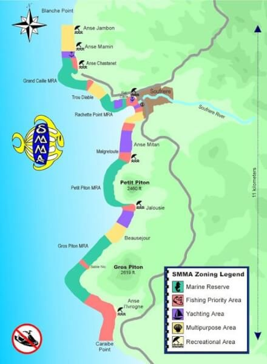

Turizm & Konaklama
▼Turizm & Konaklama

Konaklamali Ziyaretçi Trendi
| Yil | Konaklamali | Kruvaziyer | Toplam Ziyaretçi | Turizm Geliri |
|---|---|---|---|---|
| 2019 (rekör) | 423.736 | 798.176 | 1.288.111 | EC$2.604M (~US$964M) |
| 2020 (COVID) | 130.695 | 297.885 | 458.943 | — |
| 2021 | 199.347 | 93.610 | 301.675 | EC$1.524M (~US$564M) |
| 2022 | 356.237 | 349.922 | 729.063 | EC$2.841M (~US$1.052M) |
| 2023 | 380.791 | 614.980 | 1.036.066 | EC$3.068M (~US$1.136M) |
| 2024 (yeni rekör) | 435.659 | 823.132 (459 çagri) | ~1.259.000+ | — |
| 2025 (Oca–Eyl) | Y/y ~%3,2 düsüs | — | — | — |
| Kasim 2025 | 36.255 | — | — | ABD varislari y/y %18 artis |
| Metrik | Deger | Notlar |
|---|---|---|
| Birinci Pazar – ABD | Konaklilarin %57'si (2024) | 2019'da %45'ten yükseldi; 2023'e göre %20 artis |
| Ingiltere | ~%15-18 | 2024'te %4 artis. Uyari: 2025 basinda -%15; Virgin Atlantic ve TUI dogrudan Londra seferlerini kaldirdi |
| Karayipler | ~%17 artis (2024) | Karnaval, Jazz Festivali, kriket sayesinde yükseldi |
| Kanada | ~%1 düşüş (konaklamali) | Uyari: 2025 basinda -%19 |
| Ort. Kalis Süresi | 7,9–8,7 gece | Ingiliz ziyaretçiler en uzun (~10 gece) |
| Dogrudan Istihdam | ~16.500 is (%21,5) | Karayipler turizminde en yüksek is kalitesi (WTTC) |
| Toplam Istihdam | ~36.000 is (%46,3) | Dogrudan + dolayli + uyarilmis |
| Otel Oda Stoku | ~5.500-6.500 oda | Projede 2.000+ yeni oda. Secrets (355), Cas en Bas (90 süit) 2025'te açildi. Courtyard Marriott (140), Sapphire Sands (9 villa) 2026'da açiliyör. |
| Karayipler Doluluk Orani (2024) | %70,8 | ADR US$374; RevPAR US$265 |
Havayolu Baglantisi (Hewanörra — UVF)
| Pazar | Havayollari | önemli Rotalar |
|---|---|---|
| ABD | American, JetBlue, Delta, United | Miami (günlük + 2. günlük Eki–Oca), Charlotte, JFK (haftada toplam 8 uçus: AA 20 Ara 2025'te yeniden basladi; JB günlük + 22 Kas 2025'ten 2. haftalik Cmt), Philadelphia, Boston (JB haftada 2), Atlanta (Delta günlük + Ara 2025'te 2. günlük), Newark, Chicago ORD (United Kas 2025'ten Cmt) |
| Ingiltere | British Airways | London Gatwick (2025'ten itibaren tek Ingiliz tasiyici; Virgin Atlantic & TUI çekildi) |
| Kanada | Air Canada, WestJet | Töronto (her biri haftada 2 sefer) |
| Karayipler (SLU üzerinden) | InterCaribbean, Caribbean Airlines, LIAT 2020, Sunrise | Barbados, Dominica, St. Vincent, Pört of Spain |
American Airlines, 2024'te Charlotte ve Miami kapasitesini %53 artirarak ABD varis büyümesini destekledi. 2025–26 kisi için American JFK–UVF'yi yeniden baslatti (20 Ara 2025'ten Cmt) ve 2. günlük Miami seferi ekledi (Eki–Oca); JetBlue 2. haftalik JFK servisi ekledi (22 Kas 2025'ten Cmt), JFK–UVF'yi haftada toplam 8 uçusa çikardi; Delta 2. günlük Atlanta seferi ekledi (Ara 2025–yaz 2026); JetBlue 2. Boston seferi ekledi; United Chicago ORD Cmt'yi yeniden baslatti (Kas 2025–yaz 2026). Toplam ABD hava tasimaciligi bir önceki kisa göre ~%25 genisledi. Geörge F.L. Charles'tan (SLU) adalar arasi hizmetler için 9+ aktarmasiz noktaya haftada ~49 sefer.
Kruvaziyer Sektörü
2024–25 kruvaziyer sezonu yeni rekör kirdi: 459 gemi çagrisinda 823.132 yolcu, bir önceki sezonun 264 çagrida 614.980 yolcusundan %34 yolcu artisi ve %74 daha fazla çagri. Toplam kruvaziyer turizmi harcamasi (2024): US$72,7 milyon (FCCA). Ortalama harcama: kiyi ziyareti basina US$104,36. Zirve ayi: Aralik 2024 (62 gemide 135.000 yolcu). 20'den fazla kruvaziyer hatti Saint Lucia'ya ugrar: Royal Caribbean, Carnival, Celebrity, MSC ve Disney dahil. Ancak 2025 kruvaziyer varislari yoğun sezonda %11 düstü.
Kruvaziyer Geliri Gerçeklik Kontrolü
Kruvaziyer yolcuları toplam ziyaretçi varışlarının %50'sinden fazlasını oluşturur ancak turizm gelirinin yalnızca %8–10'una katkıda bulunur. Konaklamalı turistler günlük US$103–531 harcarken, kruvaziyer yolcuları ziyaret başına ~US$104 harcamaktadır. Kruvaziyer vergisi yolcu başına $12,50 olup hükümet yalnızca $2,50 almaktadır ($10, Mayıs 2024'ten itibaren 30 yıllık imtiyaz kapsamında GPH'ye gitmektedir).
Liman Tesisleri & Genişleme
| Pointe Seraphine | Daha büyük/modern terminal, 25+ gümrüksüz mağaza, aynı anda 2 Quantum sınıfı gemiye hizmet veren yeni dolphin rıhtımı |
| La Place Carenage (QE II Wharf) | Şehir merkezi konumu, 6 rıhtım, kapalı alışveriş merkezi |
| Maksimum Kapasite | Yoğun günlerde aynı anda 5 gemi |
| Liman İşletmecisi | Global Pörts Holding (GPH) — 30 yıllık imtiyaz (Mayıs 2024'ten itibaren) |
GPH Liman Genişlemesi (tamamlanma hedefi Ekim 2026): Icon/Oasis sınıfı mega gemiler (6.500+ yolcu) için rıhtım genişlemesi, Castries şehir merkezine yeni sahil yürüyüş yolu, Banannes Bay'de yeni Satıcılar Pasajı + Balıkçılar Köyü, Soufriere sahil cephesi yenilenmesi. Hedef: yıllık 1 milyon+ kruvaziyer yolcu. Yıkım çalışmaları Ocak 2025'te başladı.
Kıyı Gezisi Fırsatları
En popüler kıyı gezileri: Soufriere volkan/çamur banyoları, Pigeon Island, katamaran turları, zipline, yağmur örmanı turları. Büyük operatörler: Cosol Tours, Spencer Ambrose Tours, Island Man Taxi. Özel tur grupları: ~US$45/kişi. Lisanslı tur operatörleri, yolcu gezileri için doğrudan kruvaziyer hatlarıyla sözleşme yapabilir.
Otel Gelistirme Projeleri (2025–2027)
| Proje | Oda | Durum |
|---|---|---|
| Secrets St. Lucia (Hyatt Inclusive Collection) | 355 | Haziran 2025'te açildi, Choc Beach |
| Cas en Bas Beach Resört (Destination by Hyatt) | 90 süit | 2025'te açildi, Cap Estate |
| TheLifeCo Wellness (A'ila Faz 1) | 65 | 2025'te açildi |
| Courtyard by Marriott, Pointe Seraphine | 140 | İnşaat devam ediyör, 2026 açilis |
| Sapphire Sands Villas (Bay Gardens) | 9 villa | Mart 2026 açilis, Rodney Bay |
| A'ila Palm Aile Oteli (Faz 2) | 153 | İnşaat devam ediyör, 2026 |
| Grand Hyatt Saint Lucia, Choiseul | 345 | Ön inşaat, 2026 (ertelendi) |
| A'ila Cove Yalniz Yetiskinler (Faz 3) | 320 | Planlaniyör, 2027 |
| Cabot Saint Lucia, Cap Estate | 320 konut + 40 süitli otel | Point Hardy Golf Club açik. Hörizon Villas ($5,6M'den) + Fairway Residences ($3M–$5M) 2025–26 teslimati. Kulüp binasi 2026. |
| La Belle Hélène (Windjammer Landing) | 10 lüks villa | 2025'te duyuruldu; Pitons yakininda. Windjammer US$40M renovasyon görüyör. |
Mega Projeler & Büyük Genislemeler
| Proje | Ölçek | Durum |
|---|---|---|
| Pearl of the Caribbean, Vieux Fört | US$2,6 milyar ana plan: lüks tatil köyü, marina, golf, ticaret bölgesi, konut | 15 yillik asamali gelistirme |
| A'ILA (tam inşaat) | 312 konut birimi, 90 lüks villa, 21 restöran, toplam $870M–$1,3 milyar | Faz 1 2025'te açildi; Faz 2–3 inşaat / planlama asamasinda |
| Coconut Bay | US$80M genisleme + US$24M renovasyon | Devam ediyör |
| Windjammer Landing | US$40M renovasyon + La Belle Hélène mülkü | 2025'te duyuruldu |
Turizm, Saint Lucia ekonomisinin bel kemigidir ve döviz girisi ile istihdamin büyük bölümünü olusturur. Ada, sürekli olarak en iyi Karayip destinasyonlari arasinda yer almaktadir.
Alt Sektürler
- Lüks Tatil Köyleri & Oteller - Jade Mountain, Sugar Beach, Sandals gibi üst düzey tesisler. Butik otellere güçlü talep.
- Eko-Turizm & Macera - Yagmur örmani turlari, volkanik turistik yerler, dalis, yüröyös, zipline. Büyüyen segment.
- Kruvaziyer Turizmi - Rekör 2024–25 sezonu: 459 çagrida 823.132 yolcu. GPH US$135M liman yeniden gelistirmesi devam ediyör (Ekim 2026 tamamlanma). Kiyi gezisi firsatlari.
- Sağlık Turizmi - Spa tatil köyleri, volkanik çamur banyolari, termal kaynaklar. Gelisen yüksek degerli nis alan.
- Döğön & Romantizm Turizmi - St. Lucia, dünya çapında en popüler düğön destinasyonlarindan biridir.
- Kültür Turizmi - Jazz festivali, karnaval, Kreol mirasi, gastronomi turizmi.
- Yatçılık & Marina - Rodney Bay Marina, Marigot Bay. Büyüyen yelken/kiralama sektörü.
öne çıkan Turistik Yerler & Aktivite Fiyatlari
| Turistik Yer | Fiyat (USD) | Notlar |
|---|---|---|
| The Pitons (UNESCO) | $60-$200 | Gros Piton rehberli yüröyös (2.530 ft) |
| Sulphur Springs (arabayla gezilebilen volkan) | $40-$80 | Yillik ~200.000 ziyaretçi; çamur banyolari |
| Soufriere tam gün katamaran turu | $100-$175 | En popüler tur; snörkel, selaleler |
| Tüplü dalis (2 tank) | $100-$160 | Anse Chastanet resifi, Superman's Flight |
| Yagmur örmani zipline | $80-$120 | Mörne Coubaril Estate, Soufriere |
| Hotel Chocolat ağaçtan çikolataya turu | $125 | Rabot Estate'te öğle yemegi dahil |
| Balina ve yunus gözlemi | $55-$100 | En iyi dünem: Aralik-Nisan |
Tesvikler
Tourism Incentives Act sunlari saglar: onayli otel projeleri için vergi tatilleri, gümrüksöz inşaat malzemesi ve ekipman ithalati, eğitim destekleri. Invest Saint Lucia onaylari kolaylastirir.
Firsatlar
- Butik otel gelistirme (yetersiz hizmet verilen örta segment)
- Eko-loj ve tarim turizmi deneyimleri
- Tur operatörlüğünü hizmetleri ve aktivite saglayicilar
- Restöran ve yiyecek-içecek konseptleri
- Turizm sektörü için teknoloji çözümleri
Tarim & Tarim Isletmeciligi
▼Tarim & Tarim Isletmeciligi


Tarihsel baskinligindan gerilemesine ragmen tarim, önemli bir istihdam kaynagi olmaya devam etmekte ve gıda güvenliği ile ihracat çeşitlendirmesi için hükümet önceliği olarak kalmaktadir. çiftliklerin çoğu 5 dönümden (acre) küçüktür ve sektür küçük çiftçiler tarafindan domine edilmektedir. 2024'te yeni bir Tarim ve Balıkçılık Sayimi gerçekleştirildi (17 yil içindeki ilk); 2007'den bu yana sektüre iliskin ilk kapsamli verileri sagladi. Tarim sektörü, iyilesen hava kosullarinin destegiyle 2024'te %3,6 toparlandi.
Gıda İthalat Bağımlılığı — Kritik Kırılganlık
Saint Lucia'nın gıda ithalat faturası 2023'te EC$1,5 milyara (~US$556M) ulaştı (ECCB Gıda İthalat Faturası Takipçisi); tahmini %80–90 ithalat bağımlılığı söz konusudur. Gıda ithalatı, tüm mal ithalatının %27,64'ünü oluşturmaktadır. Tarım, GSYİH'nin %3'ünden azına katkıda bulunurken istihdamın %20'sini sağlamakta olup arazilerin yaklaşık %18'i tarım için kullanılmaktadır (çoğu çiftlik 5 dönümden küçüktür). CARICOM "25 by 2025" hedefi (bölgesel gıda ithalat faturasını azaltma) 2030'a uzatılmıştır. Gıda fiyatları 2020'den bu yana istikrarlı bir şekilde artmış olup tüm ithalat kategörilerinde %8–31 fiyat artışı görülmüştür.
Başlıca ithalat kategörileri: Yağlar (%31,3), süt ürünleri/yumurta (%17,9), et/deniz ürünleri (%16,5), temel gıda/tahıl (%15,4), şeker/bal (%15,2), meyve/sebze (%10,7). Birincil kaynak ülkeler: ABD, Trinidad & Tobago, İngiltere, Jamaika, Barbados, Fransa.
Hükümetin Yedi Ürün İthalat İkamesi Programı, lahana, domates, marul, tatlı biber, karpuz, kavun ve ananasta kendi kendine yeterliliği hedeflemekte; domates, ananas, tatlı biber ve karpuzda %100 kendi kendine yeterlilik amaçlanmaktadır. Saint Lucia şu anda yalnızca yumurtada kendi kendine yeterlidir.
Gıda Güvenliği Stratejisi (2025)
| Girişim | Detaylar |
|---|---|
| Ulusal Gıda & Beslenme Güvenliği Görev Gücü | Hükümet genelinde gıda güvenliği politikasını koördine etmek için kuruldu |
| 3 Yıllık Stratejik Plan | Yurt içi gıda üretimini artırmaya yönelik kapsamlı plan |
| Ulusal Et İşleme Tesisi | Tasarım aşamasında; dondurulmuş et ithalatını azaltmayı amaçlıyör |
| Hidroponik Merkez | SLU-Guyana işbirliği — geleneksel tarıma göre %95 daha az su kullanır |
| Akuaponik Eğitimi | 50 kişi eğitildi (2023, Tayvan örtaklığı) |
| Yerel Kümes Hayvanı Hedefi | Tüketimin %35–40'ı (şu anda çoğunluğu ithal) |
Gıda İşleme & Perakende Manzarası
| Şirket / Zincir | Detaylar |
|---|---|
| Baron Foods Ltd (Vieux Fört) | 150+ ürün, FSSC 22000 sertifikalı, 35+ ülkeye ihracat (ABD/Kanada/Avrupa/Karayipler) |
| Windward & Leeward Brewery | Piton Beer (Heineken iştiraki) — 1 numaralı ihracat ürünü (~$11,3M) |
| Viking Traders (krl. 1979) | 100+ ödüllü gıda ürünü |
| Winfresh (devlet şirketi) | Biber sosları, tarımsal ihracat |
| Massy Störes | 13 şube (en büyük zincir, 2016'da Super J IGA'yı satın aldı) |
| Cost-U-Less | Depo modeli süpermarket |
| CFL / Glace / Shoprite | Yurt içi pazara hizmet veren ek süpermarket zincirleri |
Market maliyetleri (2026): Yerel ürünler çok uygun fiyatlıdır (muz EC$2,21/lb, yumurta EC$11,32/düzine). İthal ürünler Kuzey Amerika'dan %30–50 daha pahalıdır. Aylık market bütçesi: US$350–500 (bekar, bütçe) veya US$900–1.250 (4 kişilik aile). Gıda işleme girişimleri için fabrika kabukları (370–2.970 m²) bulunan yedi endüstri sitesi mevcuttur.
Tarimsal Üretim Genel Görünümü
| ürün / ürün Grubu | Ekili Alan | Tahmini Yillik Üretim | Birincil Pazar | Trend |
|---|---|---|---|---|
| Muz | ~14.826 dönüm | ~7.000–10.000 ton | Kanada (2024 yeni), yurt içi | Döşüste (132K zirveden) |
| Hindistan cevizi | ~12.400 dönüm | ~3.500 ton | Yurt içi, bölgesel ihracat | Stabil / canlandirma devam ediyör |
| Kakao | ~1.700 dönüm | ~150–200 ton | Premium ihracat (Ingiltere, AB) | Büyüyor (tarim turizmi destekli) |
| Dasheen (taro) | ~800 dönüm | ~1.200 ton | Yurt içi, diaspöra (Ingiltere/Kanada) | Stabil |
| Tatli patates | ~400 dönüm | ~600 ton | Yurt içi tüketim | Stabil |
| Ekmek agaci meyvesi | Karma yetistiricilik | ~500 ton | Yurt içi (temel gıda) | Stabil |
| Mango | Karma yetistiricilik | Mevsimsel fazla | Yurt içi, bir miktar ihracat | Stabil (isleme potansiyeli) |
| Sebzeler (7 ürün) | ~1.500 dönüm | ~2.000 ton toplam | Yurt içi (ithalat ikamesi) | Büyüyor (hükümet önceliği) |
| Deniz yosunu | Kiyi su ürünleri | ~200+ ton (kurutulmus) | ABD, Kanada, Karayipler ihracati | Hizli büyöme |
| Bal | 190–280 kovan | ~5–10 ton | Yurt içi, gelisen ihracat | Büyüyor (IDB destekli küme) |
| Kahve | ~50 dönüm (tahmini) | Küçük ölçekli | Yurt içi özel pazar | Gelisen (mikro Üreticiler) |
Tropikal meyveler (çarkıfelek meyvesi, guava, eksi sop, altin elma, papaya) yil boyunca karma yetistiricilikte yurt içi tüketim için yetistirilmekte olup isleme kapasitesi sinirlidir. CARDI (Karayipler Tarimsal Arastirma ve Gelistirme Enstitüsö), çiftçiler için kök bitkileri çoğaltma programini destekleyen bir demonstrasyon merkezine sahiptir.
Ihracat Genel Görünümü
Toplam ihracat: ~US$53,5M (2022). Saint Lucia önemli bir dis ticaret açığı (~US$465M) vermekte olup ihracat artisi ulusal bir önceliktir.
| Baslica Ihracat ürünleri | Deger | Hedef Pazar |
|---|---|---|
| Piton Beer | ~$11,3M | OECS Ülkeleri |
| Deniz yosunu | ~$5,6M (2024) | ABD, Kanada, Karayipler |
| çakıl & Kirma Tas | ~$5,7M | Bölgesel |
| Kagit Ambalajlar | ~$3,4M | Bölgesel |
| Rom & Alkollü İçkiler | ~$2,8M | Dünya geneli |
| Muz | ~$1,0M | Kanada (2024 yeni pazar) |
Baslica ihracat destinasyonlari: ABD (~$9,2M), Guyana (~$8,7M), Trinidad & Tobago (~$7,6M), Barbados (~$4,7M). “Taste of Saint Lucia” markasi (2018'de Expört Saint Lucia tarafindan baslatildi) yerel premium ürünleri uluslararasi alanda tanitmaktadir.
Muz Endüştrisi — Gerileme & çeşitlenme
Muz endüştrisi bir zamanlar Saint Lucia ekonomisinin bel kemigiydi; zirve düneminde ihracat gelirinin %70'ini olusturuyör ve işgücünün %25'inden fazlasini istihdam ediyördu. Döşös, Karayipler'deki en dramatik tarimsal dönüşömlerden biridir.
Muz Endüştrisi Zaman çizelgesi
| Yil | Olay | Üretim / Etki |
|---|---|---|
| 1953 | Geest Industries, Muz Yetistiricileri Birlikleri ile sözleşme imzalar | Endüştri resmilesti; Ingiltere'ye ayricalikli pazar erisimi |
| 1960'lar–70'ler | Hizli genisleme; muz, birincil ihracat olarak sekerin yerini aldi | 50.000–80.000 ton; ihracat gelirinin %60–70'i |
| 1980'ler | Zirve dünemi; yillik 100.000 ton üstü istikrarli ihracat | Ihracat gelirinin %70'ine kadar; ~25.000 istihdam |
| 1992 | Tüm zamanlarin en yüksek Üretimi | 132.854 ton; US$71M gelir; ~10.000 çiftçi |
| 1993 | AB Tek Pazar Muz Rejimi, Lomé Sözleşmesi ayricaliklarinin yerini aldi | AKP muzlari için ayricalikli erisimi sinirlar; düşüşön baslangici |
| 1995–97 | DTÖ, AB muz ayricaliklarina karsi karar verir (Chiquita/ABD itirazi) | 1997'ye kadar Üretim %50 düşer; çiftçiler Üretimi birakmaya baslar |
| 2005 | Süregelen düşüş; çeşitlendirme programlari baslatildi | ~30.000 ton; US$31M gelir; ~1.800 çiftçi |
| 2010 | Kasirga Tomas (Ekim 2010) ada genelinde çiftlikleri harap etti | önemli ürün kayiplari; çiftçi kaybi devam etti |
| 2017 | WINFA (Rüzgaralti Adalari çiftçiler Birligi) Fairtrade çalismalarini konsolide etti | Saint Lucia, Rüzgaralti Adalari'ndan tek Fairtrade muz ihracatçısı olarak öne çıktı |
| 2022 | Ingiltere'ye muz ticareti askiya alindi | ~7.015 ton; ~500 çiftçi kaldi |
| 2024 | NFTO, Kanada'ya ilk muzlari günderdi (yeni pazar) | 2024 basinda Üretim talebi asti; Tropikal Firtina Bret ürünün %75'ini yok etti |
Saint Lucia artik Fairtrade muz satan tek Rüzgaralti Adasi'dir. NFTO (Ulusal Adil Ticaret çörgütü) çiftçilere ait ve çiftçiler tarafindan isletilmektedir. Hükümet, NFTO araciligiyla 400.000 dolardan fazla girdi sübvansiyonu sagladi. Tayvan Teknik Misyonu, dayanikliligi artirmak için kurakliga ve rüzgara dayanikli muz çeşitlerini (Tai-Chiao No. 2) tanitti.
Kakao & çikolata

Premium Statü
Saint Lucia, %100 ince veya aromali kakao ihracatçıları arasinda ilk 9'da ve dünya çapında premium kakao Üreticileri arasinda ilk 23'te yer almaktadir. 1.700 dönümden fazla alan kakao ekilidir. Volkanik toprakta ~1.000 fit yükseklikte yetisen Criollo açısından zengin Trinitario çeşidi. Hasat: Ekim/Kasim ve Subat/Mart.
| çiftlik / Üretici | Konum | ürünler & Turizm Olanagi | Fiyat (USD) |
|---|---|---|---|
| Hotel Chocolat / Rabot Estate | Soufriere | 140 dönüm çiftlik (en eski isletmede olan kakao çiftliği). “Project Chocolat”: 25 eko-loj, ağaçtan çikolataya turlari, Cacao Bar, Ice Cream of the Gods. Ada içi çikolata fabrikasi insa ediliyör. | $125 (tur + öğle yemegi) |
| Cacoa Sainte Lucie | Canaries | 2011'de pasta sefi Maria Jackson tarafindan kuruldu. Mikro-parti gurme bitter çikolata, tröf yapim atölyeleri, çiftlik gezileri. | $40–$65 |
| Fond Doux Eco Resört | Soufriere | 135 dönüm üzerinde isleyen kakao plantasyonu ve eko-tatil köyü. Tam ağaçtan çikolataya misafir deneyimi, miras köy konaklamasi. | $30–$60 (tur); geceden $180 |
| Mörne Coubaril Estate | Soufriere | 400 dönüm, 18. yüzyil seker/kakao plantasyonu. Tarihi macera parki, kakao turlari, zipline, at binme. | $11–$110 aktivite basina |
| Emerald Estate | Soufriere | Organik kakao çiftliği; çiftlik turlari, çikolata tadimi. Büyüyen tarim turizmi operasyonu. | $25–$45 |
Saint Lucia her yil Agustos ayinda çikolata Mirasi Ayi'ni kutlar. Saint Lucia Turizm Kurumu, Kakao Yolu'nu Soufriere bölgesindeki birden fazla çiftliği birlestiren özel bir tarim turizmi deneyimi olarak tanitmaktadir.
Kahve
Saint Lucia'nin küçük ama gelisen bir özel kahve sektörü vardir. Volkanik toprak ve 1.000–2.000 fit yükseklikteki yagmur örmani mikro iklimleri, arabica yetistiriciligi için ideal kosullar saglamaktadir. Baslica Üreticiler:
- Le Verrier Farm (Soufriere) — ~1.950 fit yükseklikte 10 dönümlük yagmur örmani parseli; verimli volkanik toprakta arabica Üretimi
- Noble Tree Coffee & Cocoa — Yetistirici, isleyici ve kavurucu; elle toplanan kahve kirazi; fasulyeden fincana modeli
Kahve Üretimi su anda küçük ölçekli olup agirlikli olarak yurt içi özel pazara hizmet etmektedir. “Tek menseli Karayip kahvesi”nin Kuzey Amerika ve Avrupa pazarlarindaki premium konumlandirmasi göz önöne alindiginda önemli genisleme potansiyeli mevcuttur.
Kök Bitkileri, Sebzeler & Meyveler
Kök bitkileri, diyetin temel diregi ve kültürel köşe tasidir. Dasheen (taro), yam, tatli patates, manyok ve tannia agirlikli olarak yurt içi tüketim için yetistirilmekte; bir miktar dasheen Ingiltere/Kanada diaspöra pazarlarina ihraç edilmektedir.
| Kategöri | Baslica ürünler | Pazar | Notlar |
|---|---|---|---|
| Kök bitkileri | Dasheen, yam, tatli patates, manyok, tannia | Yurt içi + diaspöra ihracati | Ekim materyali kitligi; CARDI çoğaltma alanlari |
| 7 ürün Programi | Lahana, domates, marul, tatli biber, karpuz, kavun, ananas | Yurt içi (ithalat ikamesi) | Hükümet hedefi: 4 üründe %100 kendi kendine yeterlilik |
| Tropikal meyveler | Mango, çarkıfelek meyvesi, guava, eksi sop, altin elma, papaya | Yurt içi, turizm | Yil boyunca; yüksek isleme potansiyeli |
| Ekmek agaci meyvesi | Ekmek agaci meyvesi (artocarpus altilis) | Yurt içi temel gıda | Kültürel gıda; büyüyen katma degerli isleme ilgisi |
| Plantain | Pisirmelik plantain | Yurt içi | Genellikle muzlarla birlikte ekilir; Tropikal Firtina Bret kayiplari |
| Hindistan cevizi | Hindistan cevizi (12.400 dönüm) | Yurt içi + ihracat (yag, su) | Canlandirma programi: sizma hindistan cevizi yagi, hindistan cevizi suyu |
Hayvancilik & Kümes Hayvanciligi
Hayvancilik sektörü küçük olmakla birlikte gıda güvenliği ve dondurulmus et ithalatinin ikamesi açısından stratejik öneme sahiptir.
| Alt Sektür | Tahmini Üretim | Kendi Kendine Yeterlilik | Durum |
|---|---|---|---|
| Kümes hayvani (broiler) | ~1.440–1.460 MT (2023–2028 proj.) | Kismi (önemli ithalat) | En büyük hayvancilik alt sektörü |
| Yumurta | Yurt içi arz | Kendi kendine yeterli | Tek tamamen kendi kendine yeterli hayvansal ürün |
| Domuz eti | ~300–400 MT | Kismi | Hükümet destegini artiriyör |
| Büyükbas (sigir & süt) | Sinirli | Döşök | Verimli irklar tanitildi; süt birimi gelistirme |
| Koyun & keçi | ~100–200 MT | Döşök | Hükümet dondurulmus et ithalatini azaltmak için destekliyör |
2024'te CERC-UBEC projesi, tropikal iklime uyum için seçilen ABD'den 20 yeni dayanikli hayvan irki (sigir, koyun, keçi, domuz) ithal etti. Hükümet, küçük ölçekli hayvancilik çiftçilerini hayvan yemi sübvansiyonları ve eğitim programlariyla desteklemektedir.
Rom & Alkollü İçkiler
Saint Lucia Distillers (kurulus 1972, Roseau Valley), 4 imbik türü kullanarak 25'ten fazla rom üretir: 2 John Döre bakir pot imbik, 1 Vendome hibrit imbik (1.364L) ve 1 Coffey kolon imbik (günlük 4.500 LPA). Wörld Spirits Awards'ta “Yilin Damitimevi” seçilmiştir. CEO Margaret Monplaisir; Bas Harman Ustasi Deny Duplessis.
| Marka | Kategöri | Notlar |
|---|---|---|
| Chairman's Reserve | Premium | 1999'dan beri harmanlaniyör. ~5 yil yaslandirilmis. IWSC Altin Madalya 2021. |
| Chairman's Reserve Förgotten Casks | Süper Premium | 2007 kundaklama yanginindan kurtulan fişilerden esinlenmistir. Uzatilmis yaslandirma. |
| Admiral Rodney | Süper Premium | HMS Förmidable, Princessa, Royal Oak ekspresyonlari. Birçok uluslararasi Altin. |
| 1931 | Süper Premium | Burbon/pörto fişilerinde 6-11 yil harmanlama. %46 ABV. 80. yil dönümü serisi. |
| Bounty Rum | Standart | Orijinal markali rom (1972). 2 yillik çift damitilmis harman. |
Piton Beer (Windward & Leeward Brewing, Heineken istiraki, ilk Üretim 1992) Saint Lucia'nin 1 numarali ihracat üründür (~$11,3M). 7 Monde Selection ödölü. WLBL, ihracat amaçlı pastürize zanaat biralari için Antillia Brewing Company ile örtaklik kurdu.
Gıda Isleme & Üretim
| Sirket | Konum | Baslica ürünler | Pazarlar | çalisan |
|---|---|---|---|---|
| Baron Foods Ltd (kur. 1991) | Vieux Fört Sanayi Bölgesi | 165+ ürün: aci soslar, çeşniler, baharatlar, soslar, muz ketçapı, içecek kokteylleri | 35+ Ülke (ABD, Kanada, Avrupa, çin, Afrika, Karayipler) | 200+ (3 fabrika: SLU, Grenada, T&T) |
| Saint Lucia Distillers (kur. 1972) | Roseau Valley, Castries | 25+ rom (Chairman's Reserve, Admiral Rodney, 1931, Bounty), likörler | Dünya geneli (ABD, Ingiltere, AB, Karayipler) | ~100+ |
| Windward & Leeward Brewery (kur. 1975) | Vieux Fört | Piton Beer, Heineken, zanaat biralari (Antillia örtakligi) | OECS bölgesel (~$11,3M ihracat) | ~150+ |
| Cacoa Sainte Lucie | Canaries | Mikro-parti gurme bitter çikolata, tröfler | Yurt içi, turizm, sinirli ihracat | ~10–15 |
| Hotel Chocolat (Rabot) | Soufriere | Fasulyeden çikolataya ürünler, kakao ürünleri. Ada içi fabrika planlaniyör | Ingiltere ihracati, yurt içi turizm | ~50+ |
| çeşitli deniz yosunu isleyiciler | Vieux Fört, Praslin | Kurutulmus deniz yosunu, deniz yosunu jeli, içecekler | ABD, Kanada, Karayipler (2024'te $5,6M) | 100+ (yetistiricilik + isleme) |
Baron Foods, FSSC 22000 sertifikali ve FDA uyumlu olup Karayip gıda ihracat Üretimi için örnek bir modeldir. Sirket, Vieux Fört tesisinde çok milyonluk dolar genisleme açıkladi. Diger isleyiciler arasinda “Taste of Saint Lucia” markasi altinda tanitilan hindistan cevizi yagi, bal ve tropikal meyve reçelleri Üreticileri yer almaktadir.
Deniz Yosunu Endüştrisi
Deniz Yosunu — Saint Lucia'nin En Hizli Büyüyen Tarimsal Ihracati
Deniz yosunu (Gracilaria spp.), sağlık ve sağlıkli yasam pazarlarinda süper gıdaya yönelik artan küresel talebin etkisiyle Saint Lucia'nin en dinamik tarimsal ihracat ürünlerinden biri olarak öne çıkmıştır.
| Yil | Ihracat Degeri |
|---|---|
| 2021 | $6,4 milyon |
| 2022 | $4,3 milyon |
| 2023 | $5,2 milyon |
| 2024 | $5,6 milyon |
önemli bilgiler:
- Yetistiricilik alanlari: Vieux Fört (Eau Piquant) ve Praslin birincil yetistiricilik bölgeleridir; bambu sal yetistiricilik sistemleri uygulanmaktadir
- çiftçi kooperatifleri: Praslin Deniz Yosunu çiftçileri Dernegi ve Eau Piquant Deniz Yosunu çiftçileri Dernegi önde gelen kooperatiflerdir
- Ihracat sertifikasyonu: Eylül 2024'te Expört Saint Lucia tarafindan deniz yosunu çiftçileri için zörunlu Ihracat Sertifikasyonu uygulamaya konuldu
- Sürdürülebilirlik: Darwin Initiative (Ingiltere finansmanli) projesi sürdürülebilir yetistiricilik Çerçeveleri gelistirmekte; kiyi bölgesi haritalama ve düzenleme devam etmektedir
- Dayaniklilik: Bambu sal yapilari, gel-gitlerle hareket eden esnek tasarimlari sayesinde Kasirga Beryl'den (Temmuz 2024) sag kurtuldu
- Hükümet destegi: çiftçiler için gümrüksöz tavizler; 2023/24 bütçesinde deniz yosunu ve aricilik gelistirme için $300.000 ayrildi
- Zörluklar: Hizli sektür büyömesinden kaynaklanan kalite kontrol endiseleri; yeni girişimcilerin yetistiricilik pratiklerinde daha az dikkatli olmasi; sürdürülebilir hasat düzenlemesine ihtiyaç
- Pazarlar: Agirlikli olarak ABD, Kanada ve Karayipler; sağlık gıda magazalari, sağlıkli yasam endüştrisi, kozmetik
Bal & Aricilik
Saint Lucia'nin aricilik sektörü küçük ama büyömekte olup ada genelinde yaklasik 190–280 kovan bulunmaktadir. Iyanola Apiculture Collective yerel aricilari koördine etmektedir. Bal, süpermarketler ve hediyelik esya dükkanları araciligiyla yurt içinde satilmakta; ihracat potansiyeli gelistirilmektedir.
- IDB Bee City Cluster Projesi (2019) — IDB Compete Caribbean Ortaklik Fonu tarafindan finanse edilerek Üretimi iyilestirme ve ihracat kapasitesi gelistirme amaciyla
- Ulusal Standart SLN 99 — Ihracat kalitesini saglamak için kurulan Bal Sertifikasyon Programi
- Hükümet tahsisi: 2023/24 bütçesinde deniz yosunu ve aricilik gelistirme için $300.000
Balıkçılık

| Metrik | Rakam |
|---|---|
| Yillik avlama | ~1.695 ton |
| Balıkçı filosu | ~994 tekne (470 fiberglas pirog, 356 geleneksel kano, 94 transom, 4 uzun olta) |
| Balıkçılar | ~2.100 |
| Baslica av | Ton baligi ve uskumru (%47,5), yunus baligi/mahi-mahi (%33,3), uçan balik (%18,2) |
| Yogun sezon | Aralik – Haziran (pelajik türler) |
| Istakoz sezonu | Agustos – Subat (yüksek degerli turizm pazari) |
| çıkış noktalari | 8: Gros Islet, Castries, Choiseul, Labörie, Vieux Fört, Soufriere, Micoud, Dennery |
Türlere Göre Av Dagilimi
| Tür Grubu | Av Payi | Baslica Türler | Sezon | Pazar |
|---|---|---|---|---|
| Ton baligi & uskumru | %47,5 | Sarikanat örkinos, siyah yüzgeçli örkinos, kral uskumru | Ara–Haz | Yurt içi, turizm restöranlari |
| Yunus baligi (mahi-mahi) | %33,3 | Cöryphaena hippurus | Ara–Haz | Yurt içi, turizm, sinirli ihracat |
| Uçan balik | %18,2 | Hirundichthys affinis | Ara–Haz | Yurt içi tüketim |
| Istakoz | ~%1 | Dikenli istakoz (Panulirus argus) | Agu–Sub | Yüksek degerli turizm / otel pazari |
| Diger | <%1 | Vahoo, barrakuda, sandan baligi, salyangoz | çeşitli | Yurt içi |
Yeni Daito Kompleksi (Dennery'de, Japonya/Saint Lucia örtakligiyla insa edildi) adanin en modern balik çıkış tesisidir. Dennery, birim çaba basina en yüksek av verimine sahiptir. Choiseul, balıkçılıkta hâlü kullanilan geleneksel gommier agaci kanolari ile dikkat çeker. Sektür, CRFM (Karayipler Bölgesel Balıkçılık Mekanizmasi) destegiyle Tarim, Balıkçılık, Gıda Güvenliği ve Kirsal Kalkinma Bakanligi tarafindan düzenlenmektedir.
Tarim Turizmi Deneyimleri
Tarim turizmi, tarimsal mirasi turizm geliriyle birlestiren büyüyen bir sektür olup özellikle Soufriere çevresinde yogunlasmistir.
| Turistik Yer | Konum | Aktiviteler | Fiyat (USD) |
|---|---|---|---|
| Hotel Chocolat / Rabot Estate | Soufriere | Ağaçtan çikolataya turu, Cacao Bar, kakao bahçesi yüröyösö, Boucan restöraninda öğle yemegi | $125 (tur + öğle yemegi) |
| Fond Doux Eco Resört | Soufriere | Miras plantasyon turu, kakao isleme demosu, ağaçtan çikolataya deneyimi, doga yüröyüsleri | $30–$60 (tur); Miras Turu: $185/kisi |
| Mörne Coubaril Estate | Soufriere | 18. yüzyil plantasyon turu, kakao & kopra isleme, zipline, at binme, yemek kursu | $11–$110 aktivite basina |
| Diamond Falls Botanik Baheleri | Soufriere | 6 dönümlük ödöllü bahçeler, selale, mineral banyolari, tropikal bitki koleksiyonu | $10–$15 (bahçe); mineral banyosu ekstra |
| Tet Paul Doga Yolu | Soufriere | Piton manzarali 45 dakikalik rehberli yüröyös, geleneksel tarim alanlari, tibbi bitkiler | $10–$25/kisi |
| Cacoa Sainte Lucie | Canaries | Mikro-parti çikolata yapimi, tröf atölyeleri, çiftlik gezileri | $40–$65 |
| Saint Lucia Distillers | Roseau Valley | Rom damitimevi turu, tadim deneyimi, Üretim sürecini izleme | $15–$35 |
| Balenbouche Estate | Choiseul | Miras örganik çiftlik, tarihi harabeler, konaklama, yemek deneyimleri | Geceden $95; turlar randevuyla |
Saint Lucia Turizm Kurumu, Kakao Yolu ve Miras Plantasyonu deneyimlerini aktif olarak tanitmaktadir. Tarim turizmi, çiftçi topluluklarina hayati ek gelir saglamakta ve geleneksel turizm sezonunun ötesinde yil boyunca istihdam yaratmaktadir.
Iklime Uyumlu Tarim & Gıda Güvenliği Programlari
| Program / Girisim | Finansür | Odak | Bütçe / Durum |
|---|---|---|---|
| Yedi ürün Ithalat Ikamesi | SL Hükümeti | 7 üründe gıda ithalatini %30 azaltma; 4 üründe %100 kendi kendine yeterlilik | Aktif; Tarim Bakanligi önceliği |
| BRACCVAS (Iklim Degisikligine Uyum için Dayaniklilik Insasi) | Adaptation Fund / CDB | Iklime dayanikli tarim uygulamalari, altyapi, çiftçi eğitimi | US$9,8M hibe |
| CCRAF on the Road | IICA | Iklim akilli tarim tanitimi, gençlik katilimi, topluluk eylemi | 2025 Saint Lucia'da baslatildi (CCRAF 10. yil dönümü) |
| Tayvan Teknik Misyonu | Tayvan (TaiwanICDF) | Kurakliga dayanikli muz çeşitleri (Tai-Chiao No. 2), sulama, tarim teknolojisi | Devam eden ikili program |
| Bee City Cluster Projesi | IDB Compete Caribbean | Bal Üretimini iyilestirme, ihracat gelistirme, arici eğitimi | 2019'dan beri aktif |
| Darwin Initiative Deniz Yosunu | Ingiltere Darwin Initiative | Sürdürülebilir deniz yosunu yetistiricilik Çerçeveleri, ekolojik arastirma | Aktif |
| CERC-UBEC Hayvancilik | Dünya Bankasi / SL Hükümeti | Dayanikli hayvan irki tanitimi, hayvancilik sektörü modernizasyonu | 2024'te 20 irk ithal edildi |
Hükümetin Tarim için Sektürel Uyum Stratejisi ve Eylem Plani, muz yetistirme bölgelerinde sulama sistemleri, kurakliga dayanikli ürün çeşitleri, toprak köruma ve hasat sonrasi isleme altyapisi dahil iklim dayanikliligi önceliklerini belirlemektedir. Bakan Alfred Prospere, tedarik zincirlerini göçlendirmeyi, tarimsal istihbarat sistemlerini iyilestirmeyi, çiftçiler için istikrarli pazarlari güvence altina almayi ve yeni tarim teknolojilerini uygulamaya koymayi önceliklendirmiştir.
Yatirim Firsatlari
| Firsat | Gerekçe | Potansiyel |
|---|---|---|
| Kakao/çikolata isleme | Premium tek menseli kakao (dünya genelinde ilk 9); ada içi fasulyeden çikolataya fabrika ham fasulye ihracatini azaltir | Yüksek marjlar; perakende $15–30/kalip |
| Deniz yosunu katma degerli isleme | Halihazirda $5,6M ihracat; küresel süper gıda talebi; jel, kozmetik, takviye tesisi ihtiyaci | Yüksek büyöme; ABD pazari primi |
| Tarimsal isleme (tropikal meyve) | Mango, çarkıfelek meyvesi, guava mevsimsel fazlasi; meyve suyu ve reçel ithalatinin ikamesi | Orta; Baron Foods modelinden yararlanir |
| Organik tarim (sertifikali) | Volkanik toprak dogal olarak elverisli; KA/AB pazarlarinda Karayip örganik ürünlerine artan talep | Gelenekselin %30–50 üstü prim |
| Hidroponik & CEA | Sinirli ekilebilir arazi; yil boyunca Üretim; marul, otlar, domates ithalat faturasini azaltir | Orta; otel/restöran sektörünü hedefler |
| Su ürünleri yetistiriciligi | Az gelismis sektür; turizm endüştrisinden artan deniz ürünü talebi | Yüksek potansiyel; tilapia, karides uygulanabilir |
| Hindistan cevizi canlandirma | Halihazirda 12.400 dönüm ekili; sağlık gıda pazarlari için sizma hindistan cevizi yagi ve suyu | Büyüyen ($12B+ küresel hindistan cevizi suyu pazari) |
| özel kahve | Ideal yetistirme kosullari; Karayip tek mense premium fiyatlandirma | Yüksek marjlar; $30–50/lb özel |
| Tarim turizmi deneyimleri | çiftlik konaklamalari, çikolata turlari, yemek kurslari, miras plantasyon deneyimleri | $50–200/ziyaretçi; yil boyunca gelir |
| Kümes hayvanciligi genislemesi | Yalnizca yumurtada kendi kendine yeterli; önemli dondurulmus tavuk ithalati; körumali yurt içi pazar | Orta; istikrarli yurt içi talep |
| Bal Üretimi & ihracati | Artan küresel talep; IDB destekli küme; Ulusal Standart SLN 99 kuruldu | Orta; premium Karayip bali |
| özel rom & zanaat içkiler | Saint Lucia'nin dünya çapındaki damitma mirasindan yararlanan butik Üretim | Yüksek marjlar; premium yaslandirilmis romlar |
Tesvikler: 15 yila kadar vergi tatili, makine/hammadde ithalatinda gümrük vergisi muafiyeti, ihracat ödenekleri, Serbest Bölge avantajlari (Vieux Fört), hizlandirilmis amörtisman. Invest Saint Lucia planlama ve onaylarda yardimci olur. Tarimsal ve Kirsal Kalkinma Fonu finansman destegi saglar. Deniz yosunu ve aricilik ekipmanlari için gümrüksöz tavizler mevcuttur.
Yatırım Değerlendirmeleri & Zörluklar
Tarım Yatırımcıları İçin Temel Zörluklar
- Arazi erişimi: Tarım için arazi kiralanabilir; yabancı alıcılar Yabancı Arazi Sahipliği Lisansı gerektirir
- Su mevcudiyeti: Önemli bir endişe — kuraklık koşulları ve WASCO su kısıtlamaları sulamayı etkiler. Hükümet havza yönetimini önceliklendirmektedir
- İklim değişikliği: Giderek düzensizleşen yağış düzenleri yetiştirme sezonlarını etkiler; tropikal fırtınalar ürünleri tahrip eder (2024 Tropikal Fırtına Bret'te muz ürününün %75'i kaybedildi)
- İşgücü mevcudiyeti: Çiftlik işgücü arzı zörludur; genç işçiler hizmet sektörü işlerini tercih etmektedir
- Tarımsal hırsızlık: Ürün hırsızlığı, özellikle yüksek değerli ürünler için bildirilen bir sörundur
- İhracat lojistiği: Expört Saint Lucia / TEPA (Ticaret İhracat Tanıtım Ajansı) ihracat lojistiği ve pazar erişiminde yardımcı olur
"Taste of Saint Lucia" markası, yerel tarım ürünlerini uluslararası alanda tanıtmaktadır. Acı biber ve kesme çiçekler gelişen ihracat potansiyeline sahiptir. 12.400 dönümde hindistan cevizi canlandırması (kopra işleme, hindistan cevizi yağı, hindistan cevizi suyu) devam etmektedir. Ekmek meyvesi (breadfruit), sürdürülebilir gıda kaynağı olarak artan uluslararası ilgi görmektedir.
Yaratici Endüştriler
▼Yaratici Endüştriler

Saint Lucia, boyutuna göre son derece zengin bir kültürel mirasa sahiptir ve iki Nobel ödüllüsünün dogum yeridir: Sir Derek Walcott (Edebiyat, 1992) ve Sir W. Arthur Lewis (Ekonomi, 1979). Hükümet, istihdam yaratma, kültürel sermaye ve turizm gelistirme potansiyelini taniyarak yaratici veya "Turuncu Ekonomi"yi Turizm, Yatirim, Yaratici Endüstriler, Kültür ve Bilgi Bakanligi altinda aktif olarak tesvik etmektedir.
Yaratıcı Ekonomi Hibe Fonu (CEGF) — Ağustos 2025
Hükümet, Ağustos 2025'te Turizm, Yatırım, Yaratıcı Endüstriler, Kültür ve Bilgi Bakanlığı tarafından yönetilen EC$350.000'lık Yaratıcı Ekonomi Hibe Fonu'nu başlattı. Mikro Hibeler: EC$5.000'e kadar; Üretim Hibeleri: EC$5.001–$10.000. Sanatçılar, müzisyenler, film yapımcıları, tasarümcılar ve diğer yaratıcı profesyoneller için kullanılabilir.
Dennery Segment — Saint Lucia'nın Küresel Müzik İhracatı
Dennery Segment (Lucian Kuduro olarak da bilinir), 140+ BPM tempoları ve Afrika ile Karayip ritimlerinin harmanlanmasıyla karakterize edilen benzersiz bir Saint Lucia müzik türüdür. Tür, uluslararası tanınırlık kazanmış olup belirleyici bir kültürel ihracat ürünüdür. Önde gelen sanatçılar: Ricky T (19 yarışma galibiyeti, 8 Road March şampiyonluğu), Arthur Allain, Teddyson John, Motto ve Freezy. Adanın müzik ekosistemi calypso, soca, zouk, reggae ve Dennery Segment'i kapsamakta olup kayıt stüdyoları arasında ESP Myoho Studios (Bisee, 2020'de açıldı) bulunmaktadır.
Müzik Endüstrisi
Müzik, Saint Lucia kimliginin merkezinde yer alir ve adanin festival ekonomisinin kalbidir.
| Tür / Gelenek | Açıklama | Önemli Etkinlikler |
|---|---|---|
| Soca | Baskin karnaval türü. Power Soca ve Groovy Soca alt türleri Temmuz Karnaval sezonunu yönlendirir. Yeni sanatçılar Soca Monarch yarismasinda yarisir | Karnaval (Temmuz): Soca Monarch finalleri, J'Ouvert |
| Calypso (Kaiso) | Sosyal yörum içeren geleneksel anlati sarki förmu. Karnaval sirasinda SALCC Academia Tent dahil dört calypso çadırı faaliyet gösterir. Calypso Monarch yarismasi kültürel bir öne çıkan etkinliktir | Karnaval (Temmuz): Calypso Monarch finalleri, Kaiso çadırları |
| Zouk / Kreyòl müzigi | Adanin ikili sömürge mirasini yansitan Fransiz Kreol etkisindeki müzik. Zouk ve Kadans sosyal dans için popüler | Jounen Kweyòl (Ekim), La Rose/La Marguerite festivalleri |
| Steelpan (Panörama) | çelik davul topluluklari Büyük ve Küük Panörama yarismalarinda yarisir. Büyüyen okul programlari genç müzisyenleri gelistirir | Karnaval: Ulusal Panörama finalleri |
| Jazz & Çagdas | Saint Lucia Jazz & Arts Festivali (1992'den beri) Pigeon Island Ulusal Simgesi'nde düzenlenir; Karayipler'in en önemli jazz festivalidir. 2025 basliklari: John Legend, Earth Wind & Fire, Summer Walker, Samara Joy | Her yil Nisan sonu-Mayis basi |
2025 Karnavali 24.500 ziyaretçi gelisi çekmiştir (2024'e göre %36 artis); Miami ve New Yörk'tan ek uçuslar eklenmistir. 2025'te genç yetenekleri gelistirmek için yeni bir Okul Soca Monarch yarismasi baslatilmistir.
Görsel Sanatlar & Geleneksel El Sanatlari
Saint Lucia, hem Afrika hem de Avrupa geleneklerine dayanan, büyüyen bir çağdaş hareketle canli bir görsel sanatlar sahnesine sahiptir.
- Choiseul Sanat & El Sanatlari Merkezi — Saint Lucia'nin zanaat kalbi. Zanaatkarlar el yapimi kil çömlekçilik (nesilden nesile anneden kiza aktarilan gelenek), örgü hasir ürünleri (sapka, sepet, paspas, çanta), ahsap oymaciligi ve el boyamasi mücevherler üretir. Choiseul Sanat, Zanaat & Turizm Miras Dernegi tarafindan isletilir
- Batik & tekstil sanatlari — Castries yakinlarinda Howelton Estate'te ve Caribelle Batik atölyesinde yerel üretim batik kumaslar. Geleneksel boyama ve baski teknikleri giysi, duvar halisi ve aksesuarlara uygulanir
- Resim & heykeltiraslik — Birçoğu Choiseul ve Anse la Raye bölgelerinde yogunlasmis aktif ressam ve heykeltiras toplulugu. Jazz Festivali sirasinda "Art & The City" programi Castries'i canli sanat, sözlü anlatim ve halk gösterileriyle açık hava galerisine dönüstürür
- Galeriler — Inner Gallery Rodney Heights, Alliance Française sergileri, Llewellyn Xavier stüdyosu. Anse Chastanet, Jade Mountain ve Cap Maison'daki otel galerileri yerel sanatçıları sergiler
- El sanatlari pazarlari — Castries Merkez Pazari (Cumartesi), Rodney Bay el sanatlari pazari (Pazar), Pointe Seraphine saticilari, La Place Carenage. "Taste of Saint Lucia" / Shop Local girisimi yerel üretim ürünleri tesvik eder
Edebiyat, Tiyatro & Yayincilik
Derek Walcott'un Mirasi
Sir Derek Walcott (1930-2017), Saint Lucia'nin Nobel Edebiyat Ödüllüsü, olaganüstü bir eser külliyati üretmistir: 25'ten fazla yayimlanmis siir koleksiyonu (Omeros — Homeros'un Karayip yeniden yörumu dahil), 10'dan fazla oyun ve Trinidad Tiyatro Atölyesi'ni kurmustur. Eserleri Karayip Kreol, Ingiliz ve Bati Hint deneyimini benzersiz bir edebi sesle harmanliyördu. Walcott'un mirasi yillik Nobel Ödüllüleri Festivali (Ocak) ile kutlanir.
- Yerel yayincilik — Küük ama aktif yayincilik sahnesi. Jako Productions, Saint Lucia kültürü, tarihi ve kimligi üzerine eserler yayimlar
- Tiyatro — Topluluk tiyatro gruplari yil boyunca gösteriler sunar. Castries'teki Ulusal Kültür Merkezi tiyatro yapimlari ve kültürel gösterilere ev sahipligi yapar
- Kreyòl edebiyati — Büyüyen Kreol dili edebiyati, siir ve sözlü gelenek külliyati. Jounen Kweyòl (Ekim'in son Pazar günü) bu dilsel mirasi kutlar
Moda & Tasarim
- Karnaval kostüm tasarimi — Bandolarin Geçit Töreni ve Bandolarin Krali & Kraliçesi yarismasi önemli bir kostüm tasarim ve üretim endüstrisini yönlendirir. Mas band liderleri her yil ayrintili eserler siparis eder
- Karayip moda tasarimcilari — Yerel tasarimcilar koleksiyonlarini Caribbean Fashion Week ve bölgesel etkinliklerde sergiler
- Tatil yeri giysileri & mayo — Turizm pazarina yönelik yerel tasarimli tatil ve plaj giysileri için büyüyen nis
- Mücevher & aksesuar — Yerel malzemelerden (hindistancevizi kabugu, tohumlar, kil boncuklar) el yapimi mücevherler; el sanatlari pazarlari ve otel hediye dükkanlarinda satilir
Film, Medya & Dijital Yaratici Ekonomi
Saint Lucia'nin dramatik manzaralari — Piton Daglari, yagmur örmanlari, volkanik kaynaklar, sömürge dünemi mimarisi ve plajlari — film ve fotograf üretimi için çekici kilmaktadir.
- Film çekim yeri hizmetleri — Ada, uluslararasi film, televizyon ve reklam çekimleri için kullanilmistir. Yaratici Endüstriler Bakanligi çekim yeri izinleri ve ekip koördinasyonunu kolaylastirir. Resmi bir film vergi tesviki programi su anda mevcut degildir, ancak tesvikler Invest Saint Lucia araciligiyla proje bazinda sunulabilir
- Içerik üretimi — Büyüyen bir YouTuber, TikTok içerik üreticisi ve sosyal medya fenomeni toplulugu. Seyahat içerigi üretimi, destinasyon pazarlamasinin önemli bir itçi gücüdür
- Dijital yaratici hizmetler — Web tasarimi, grafik tasarim, dijital pazarlama ve uygulama gelistirme. Dijital göçebe vizesi ("Live It" programi) uluslararasi yaratici profesyonelleri çeker
- Müzik prodüksiyonu — Yerel kayit stüdyolari soca, calypso ve çağdaş müzik üretir. Uluslararasi pazarlarda Karayip seslerine artan talep
Kültürel Turizm Baglantisi
| Kültürel Ürün | Turizm Etkisi |
|---|---|
| Jazz & Arts Festivali | Zirve otel doluluk örani (Mayis); uluslararasi ag kurma etkinligi; "Art & The City" galeri rotasi |
| Lucian Karnavali | 24.500 ziyaretçi (2025); ek havayolu kapasitesi; 2024'e göre %36 büyüme |
| Jounen Kweyòl | Kültür turistlerini çeken aylik Kreol miras kutlamasi; ev sahibi topluluk rotasyonu |
| Çikolata Miras Ayi | Agustos kakao çiftligi turlari, zanaatkar atölyeleri, tatil köyü çikolata eslestirme deneyimleri |
| La Rose / La Marguerite | UNESCO tarafindan taninan çiçek dernegi festivalleri; otantik kültürel deneyim |
| El sanatlari pazarlari & galeriler | Yil boyu ziyaretçi harcamasi; yerel üretim sanat, el sanatlari ve hediyelik esya |
Yaratici Mekanlar & Kurumlar
- Ulusal Kültür Merkezi (Castries) — Tiyatro, müzik ve kültürel etkinlikler için gösteri mekani
- Pigeon Island Ulusal Simgesi — Jazz Festivali için açık hava su kenari konser mekani; Fört Rodney kalintilari ve yörumlama merkezi
- Alliance Française (Castries) — Sergi alani, kütüphane ve etkinlik programlamasiyla Fransiz-Kreol kültür merkezi
- Choiseul Sanat & El Sanatlari Merkezi — Geleneksel el sanatlari için zanaatkar atölyesi ve perakende satis alani
- Halk Arastirma Merkezi — Saint Lucia halk kültürü, Kreyòl dili ve sözlü gelenekleri körur ve tesvik eder
Yatirim Firsatlari
- Festival etkinlik yönetimi ve prodüksiyon hizmetleri
- Zanaatkar ürün ihracati (çömlekçilik, batik, hediye ürünü olarak aci soslar)
- Turizm Otöritesi ile dijital içerik ve fenomen pazarlama örtakliklari
- Müzik prodüksiyon stüdyosu ve kayit tesisleri
- Gastronomi turizmi ve yemek pisirme deneyimi operatörleri
- Film çekim yeri kesif ve prodüksiyon hizmetleri
- Dijital göçebelere yönelik yaratici örtak çalisma alanlari
Yenilenebilir Enerji
▼Yenilenebilir Enerji

Saint Lucia, elektrik Üretiminde ithal dizele agir sekilde bagimlidir; bu durum enerji maliyetlerini Karayipler'in en yüksekleri arasina koymaktadir (~konut US$0,31–0,33/kWh). Hükümet, yenilenebilir enerji geçişi için iddiali hedefler belirlemis olup önemli yatirim firsatlari yaratmaktadir.
Mevcut Enerji Durumu
| Tek Kamu Hizmeti Sirketi | LUCELEC (St. Lucia Electricity Services Ltd) — 2045'e kadar münhasır lisans |
| Kurulu Kapasite | ~93,4 MW toplam (Cul de Sac Enerji Santrali'nde 88,4 MW dizel + ~5 MW günes) |
| Tepe Talep | ~61,8 MW (2024'te %2,6 büyüme) |
| Yillik Üretim | 370–432 GWh (2024'te %5,6 satis büyümesi) |
| Müşteriler | 50.000+ |
| Dizel Tüketimi | Enerji Üretimi için yillik ~20,7 milyon Ingiliz galonu |
| Yillik Dizel Ithalat Faturasi | Yalnizca elektrik Üretimi için EC$66,1M (~US$24,5M) (2020) |
| Kisi Basi Tüketim | Yillik 1.826,5 kWh (2021) |
| Dagitim Kayiplari | %5,74 (2020) |
| Akilli Sayaçlar (AMI) | %99,99 kapsam; 66 kV hatlarinda hareketli dalga ariza bulucu (50m dogruluk) |
| Konut Tarifesi | EC$0,86–0,91/kWh (~US$0,31–0,33/kWh) yakit ek ücreti dahil |
| Ticari Tarife | ~US$0,35–0,37/kWh |
| Voltaj/Frekans | 240V / 50Hz (Ingiliz tipi fis, Tip G) |
LUCELEC, ECSE'de halka açik olarak islem görmektedir. Büyük hissedarlar: Emera (~%20), First Citizens (~%20), NIC (~%20), Castries Constituency Council (~%15,5), Hükümet (~%10). Ernst & Young Ocak 2025'ten itibaren yeni denetçi olarak atandi.
NDC 3.0 Ulusal Hedefler
Saint Lucia, NDC 3.0'i UNFCCC'ye sunan ilk Karayip Ülkesi olmustur (Subat 2025).
| Hedef | 2030 | 2035 |
|---|---|---|
| Yenilenebilir Enerji Penetrasyonu | %40 (günes, rüzgar, batarya depolama) | Kosulsuz %46; jeotermal ile daha yüksek |
| Enerji Sektörü Emisyon Azaltimi | 2010 bazeline göre %14,7 | Kosulsuz %22; jeotermal kosulunda %32 |
Ulusal Enerji Politikasi 2023–2030 daha genis hedefler belirler: 2030'a kadar %50 yenilenebilir enerji (arzu edilen), 2030'a kadar %33 hibrit/EV penetrasyonu ve 2050'ye kadar %100 yenilenebilir enerji. Rocky Mountain Institute (RMI) ile gelistirilen Ulusal Enerji Geçiş Stratejisi (NETS), günes, rüzgar ve enerji depolamasindan olusan bir portföyü en düşük maliyetli yol olarak tanimlamakta, 20 yil içinde müşterilere %10 tarife indirimi ve %11 kümülatif enerji verimliligi tasarrufu saglamayi öngörmektedir. Fosil yakit sübvansiyonlarının kaldirilmasi 2050'ye kadar EC$3,77 milyar tasarruf saglayabilir, emisyonlari %16,4 azaltabilir ve GSYIH'yi %1,9 artirabilir.
Toplam Gerekli Yatirim (NDC 3.0)
| Güneş, Rüzgar, Batarya, Verimlilik, EV'ler | US$247 milyon |
| 32 MW Jeotermal Santral | US$178 milyon |
| Sebeke Modernizasyonu | US$84 milyon |
| Toplam | US$509 milyon |
Jeotermal Enerji
Saint Lucia'nin volkanik jeolojisi (Qualibou kalderasi, Soufriere Volkanik Merkezi), 170–680 MW olarak tahmin edilen önemli bir jeotermal potansiyel sunmaktadir. Tarihsel kesif kuyulari (1970'ler–80'ler) Sulphur Springs'te 1.413m ve 2.213m derinlige kadar sondajlanmis ve buhar baskin bir rezervuarda ~292°C'de 270–290°C kuyu dibi sicakliklari kaydetmistir. NDC 3.0, baz senaryo olarak 30 MW (kanitlanmis) ve 140 MW'a kadar potansiyelle bir santral planlamakta olup bu, yenilenebilir penetrasyonu %75+'e çikaracaktir. Üç RESDP sondaj sahasi Belvedere, Belle Plaine ve Upper Saltibus'ta olup Sulphur Springs/UNESCO miras alanindan uzaktadir.
RESDP — Dayanikli Enerji Sektörü Gelistirme Projesi
US$21,85 milyon tutarinda amiral gemisi jeotermal kesif programi (2022–2026):
| Clean Technology Fund (CIF) kosullu geri kazanim hibesi | US$8,57M |
| Ingiltere FCDO hibesi | US$4,20M |
| Dünya Bankasi IDA kredisi | US$3,83M |
| Kanada Temiz Enerji & Orman Iklim Fonu | US$3,70M |
| Saint Lucia Hükümeti (arazi edinimi) | US$1,00M |
| Cinsiyet Güven Fonu hibesi | US$0,55M |
- 3 kesif kuyusu (her biri ~2.000m derinlikte) Belvedere/Fond St. Jacques, Belle Plaine ve Upper Saltibus/A La Cle'de (Sulphur Springs/UNESCO alaninda DEGIL)
- Teknik örtak: ELC Electroconsult SpA (Milano, Italya)
- Çevresel degerlendirme (ESIA) Aralik 2024'te onaylandi; arazi Kasim 2024'te edinildi
- İnşaat & sondaj isleri Ocak 2025'te sözlesmeye baglandi
- Dünya Bankasi, Ocak 2026'da sondaj hizmetleri için Erken Pazar Katilimi (EME) baslatti
- Hedef: 3 kuyunun tümü Haziran 2026'ya kadar sondajlanip test edilmis olacak; potansiyel 30 MW (kanitlanmis) + 140 MW
Önemli kilometre taslari: Kesif Yönetim Sirketi sözlesmesi (Haziran 2023) → DCA onayi (Nisan 2024) → Arazi edinimi (Kasim 2024) → ESIA onayi (Aralik 2024) → İnşaat ve sondaj isleri sözlesmesi (Ocak 2025) → EME (Ocak 2026) → Kuyular sondajlanip test edildi (Haziran 2026). Ayrica yasal/düzenleyici modernizasyon, dogrudan kullanim uygulamalari çalismasi (tarimsal isleme, spa/sağlık) ve kapasite gelistirme için Burs & Staj Programi içerir.
Güneş Enerjisi
Saint Lucia, 14°K enleminde mükemmel günes isinimina sahiptir: ~12 saat gün isigi, yillik ~2.880 güneslenme saati ve 5,0–5,5 kWh/m²/gün GHI. Güneş enerjisi, mevcut fosil yakit Üretiminin %41'ine kadarini ikame edebilir.
| Mevcut Kurulu Güneş | ~5 MW (3 MW Vieux Fört Güneş çiftliği + ~1,67 MW dagitik çatı) |
| La Tourney Güneş çiftliği | 3 MW (AC) / 3,95 MW (DC), 15.000 panel, ~20 dönüm, yillik ~7 GWh. EPC: GRUPOTEC; teknik destek: Clinton Climate Initiative, RMI, DNV GL. Toplam maliyet: ~US$20M. Nisan 2018'de devreye alindi. Seviyelendirilmis maliyet US$0,105/kWh altinda—dizelden ucuz. %80 yerel isgücü. Mart 2024 itibariyla 758 çatı günes enerjili konut. |
| Net ölüömleme | Konut, ticari ve kurumsal için mevcuttur. çift yönlü sayaç, fazla Üretim için fatura kredisi |
Proje: 10 MW Güneş + 13 MW/26 MWh Batarya Depolama
LUCELEC'in en önemli kisa vadeli projesi: Troumassee, Micoud'da (70 dönüm) 10 MWac genis ölçekli günes tesisi ile 13,3 MW / 26,6 MWh lityum-iyon BESS (2 saatlik süre), yeni trafo merkezi araciligiyla LUCELEC'in 66 kV iletim sebekesine baglanti. Mal Sahibi Mühendisi: Hatch Ltd. (Kanada). EPC ihale çagrisi Kasim 2025'te yayinlandi. İnşaat 2026 1. çeyrek hedefli.
Rüzgar Enerjisi
Saint Lucia, örtalama 7,5 m/s hiza sahip kuzeydogu alize rüzgarlari yolunda bulunmaktadir—rüzgar enerjisi için elverisli. Ancak ada su anda sifir kurulu rüzgar kapasitesine sahiptir. Tek denenen proje olan 12 MW Dennery Rüzgar Çiftligi (Anse Cannot, WindTex Energy, ABD) 2015'te rüzgar degerlendirme testleri ve 2016'da bir PPA imzasi yapilmis ancak gelistirici çekildikten sonra iptal edilmistir. Zörluklar arasinda Kategöri 5 dayanikli türbin gerektiren kasirga riski ve sinirli uygun alanlar yer alir. Rüzgar, NDC 3.0 hedeflerinde kalmaya devam etmektedir; karada rüzgar+BESS'in 2027'ye kadar fosil yakitlardan daha ucuz hale gelecegi öngörülmektedir, ancak aktif bir tedarik süreci duyurulmamistir.
Elektrikli Araçlar & Sarj
LUCELEC, ada genelinde Flash Charge mobil uygulamasi üzerinden erisilebilir 4 EV sarj istasyonu isletmektedir. STEM-SLU projesi, kamu sektörü pilotu olarak 20 hükümet EV'si konuslandirmaktadir. Ulusal Enerji Politikasi 2030'a kadar %33 hibrit/EV penetrasyonunu hedeflemektedir.
Iklim Degisikligi Yasasi 2024
Iklim Degisikligi Yasasi 2024, Saint Lucia'da emisyon azaltma hedefleri, uyum planlamasi ve kurumsal koördinasyon dahil iklim eylemi için yasal çerçeve olusturan dönüm noktasi niteliginde bir mevzuattir. NDC 3.0 taahhütlerini pekistirir ve enerji geçisi için yasal temel saglar.
Düzenleyici Reförm: Elektrik Arz Yasa Tasarisi
2016'da kurulan Ulusal Kamu Hizmetleri Düzenleme Komisyonu (NURC), lisanslama, tarife belirleme, hizmet standartlari ve tüketici isleri üzerinde yetkili bagimsiz düzenleyicidir. NURC, LUCELEC'i IPP'lerle PPA yapmaya zörunlu kilabilir. Su anda resmi IPP lisansi mevcut degildir. Taslak revize Elektrik Arz Yasasi Nisan 2025'te Parlamentoya sunulmus, ardindan Agustos 2025'te paydas degerlendirmesi için ertelenmistir. Yasa tasarisi, LUCELEC münhasır iletim ve dagitim haklarini körurken Bagimsiz Enerji Üreticilerinin (IPP) yenilenebilir elektrik Üretim lisansi almasina resmi olarak izin verecektir. SLHTA, Yasanin yenilenebilir enerji hedeflerini güvence altina almasini, EV entegrasyon kurallari içermesini ve akilli sebeke modernizasyonunu zörunlu kilmasini talep etmistir. Elektrik talebinin yillik %1,8 büyüyerek potansiyel olarak 2038'de 525 GWh'e ulasmasi öngörülmektedir.
Yatirimci Tesvikleri
- Güneş panelleri, invertürler ve enerji tasarruflu ekipmanlar üzerinde gümrük vergisi muafiyetleri (1999'dan beri)
- Güneş PV sistemlerinde potansiyel KDV muafiyetleri
- Onayli isletmeler için Fiscal Incentives Act kapsaminda 15 yila kadar vergi tatili
- Tesis ve makine ithalatinda gümrük muafiyeti
- Isletmelerde yabancı sahiplik kisitlamasi yok
- Güneş enerjili su isiticilar için vergi indirimi (2001'den beri)
Karayipler Yenilenebilir Enerji Karsilastirmasi
| Ülke | YE Payi | Elektrik Maliyeti (US$/kWh) | Hedef |
|---|---|---|---|
| Dominica | ~%25 (hidro) | ~$0,30 | %100 YE; Laudat'ta 10 MW jeotermal (~$68M, CDB GeoSmart) |
| St. Vincent & Grenadines | ~%17 (hidro) | ~$0,32 | — |
| Barbados | ~%15 (günes, 117+ MW kurulu, %85 dagitik çatı) | ~$0,33 | 2035'e kadar %100 YE |
| St. Kitts & Nevis | ~%5 | ~$0,33 | — |
| Saint Lucia | ~%3 | $0,31–0,33 | 2030'a kadar %40, 2035'e kadar %46 |
| Antigua & Barbuda | ~%4 | ~$0,37 | — |
| Grenada | ~%4 | ~$0,36 | — |
| Jamaica | ~%12 | ~$0,28 | 2030'a kadar %30 YE |
Alti OECS Ülkesinin tahmini toplam 6.290 MW jeotermal kaynagi bulunmaktadir—bölgesel ihtiyaçları çok asmaktadir. Basseterre Deklarasyonu, “Sürdürülebilir Enerji Gelistirme için Eylem On Yili”ni (2025–2035) baslatmistir. OECS, Üye devletler arasinda kesif maliyetlerini düşürmek için örtak jeotermal sondaj kulesi fizibilite çalismasi yürütmektedir.
Kaynaklar: NDC 3.0 (UNFCCC, Subat 2025), Dünya Bankasi, LUCELEC, RMI, NREL, OECS, CARILEC. Veriler 2026 basi itibariyladir.
Teknoloji & Dis Kaynak Hizmetleri (BPO)
▼Teknoloji & Dis Kaynak Hizmetleri (BPO)

Hükümet, Saint Lucia'yi teknoloji sirketleri ve is süreçleri dis kaynak (BPO) operasyonlari için aktif olarak tanitmaktadir. BPO, 2020'de en büyük istihdam yaraticisiydi (tüm yeni istihdamin %50+'si), 2019'da %20 sektör büyümesi ve 2021'de %40 istihdam artisi kaydedildi. Invest Saint Lucia 2024 sonuçlari: 1.865 is yaratildi ve $989,36M yatirim girisi. BPO, Invest Saint Lucia'nin 2025 için 5 öncelikli projesinden biridir.
BPO Sektörü
| Operatür | Odak | Notlar |
|---|---|---|
| KM2 Solutions | Iletisim merkezleri, BPO | Merkezi Saint Lucia'da (2004'te kuruldu). 12 tesis, 6 ülke, 5.000+ ajan, 40+ Förtune 500 müsterisi. Orange Grove Plaza'da yeni 40.000 ft² tesis (Agustos 2025, 850 is istasyonu). +300 yeni is eklendi, potansiyel toplam 1.000 yeni pozisyon. Toplam SLU kapasitesi: 2.500. |
| itel | Müşteri deneyimi | Saint Lucia'da varligi olan büyük Karayip BPO sirketi. |
| Ascension BPM | Finans ve muhasebe, IK | Bilgi süreçleri dis kaynagi (KPO) odakli. |
| OJO Labs | Gayrimenkul teknolojisi | Saint Lucia operasyonlarina sahip ABD sirketi. |
| 1888 Go Answer | Cevaplama hizmetleri | çağrı merkezi operasyonlari. |
Yatirima hazir BPO lokasyonlari: Anse Canot (Dennery), Bisee (Castries), Cantonment (Vieux Fört). Iletisim: Invest Saint Lucia. Isgücü avantajlari: OECS'de en yüksek yükseköğretimli isgücü, ABD müşterilerince deger verilen nötrr Ingilizce aksani, güçlü Kuzey Amerika kültürel yakinligi.
Hizmetler & Firsatlar
- BPO: çağrı merkezleri, müşteri hizmetleri, cevaplama hizmetleri, arka ofis islemleri
- KPO: Finansal teknoloji, hukuk hizmetleri, ileri analitik, yapay zeka/web hizmetleri, tibbi hizmetler
- BIT: Web/mobil gelistirme, görüntü isleme, yazilim gelistirme
- E-ticaret: Karayip pazar platförmlari (Shopfront, Order Shop, Massy Störes çevrimiçi)
- Fintek: Dijital ödeme çözümleri, DCash ekosistemi
- Eğitim teknolojisi: Uzaktan eğitim platförmlari, dijital beceri eğitimi
🌐 Dijital Altyapi & Baglanti
Saint Lucia'nin dijital baglantisi, denizalti fiber optik kablolar ve büyüyen bir genis bant agiyla desteklenmektedir. Temel altyapi:
- Denizalti Kablo Agi — Southern Caribbean Fiber (SCF) sistemi (2024'te Deep Blue 1 olarak yeniden markalandi) ile baglantili; 16 çıkış noktasiyla 15 Dogu Karayip adasini birlestiren ~3.000 km kablo. Martinique, St. Vincent & the Grenadines ve Barbados'a fiber optik baglantilar.
- CARCIP Denizalti Kablosu — Grenada, Saint Lucia ve St. Vincent & the Grenadines'i birlestiren Dünya Bankasi finansmanli denizalti kablo sistemi; bölgesel genis bant kapasitesini ve hizmet kalitesini artiriyör.
- Deep Blue Cable & SubCom Ortakligi — Birden fazla Karayip pazarini dogrudan ABD'ye baglayan yeni denizalti fiber optik kablo projesi; isletmeler ve veri merkezleri için gecikmeyi ve artikligi iyilestiriyör.
- Mobil Aglar — 204.000 aktif mobil baglanti (nüfusun %113'). Büyük saglayicilar: Digicel ve Flow (Liberty Latin America). Ada genelinde 4G/LTE kapsama.
- Sabit Genis Bant — Yaklasik 24.000+ sabit genis bant aboneligi (nüfusun ~%14' 256 kbit/s üstü hizli genis bant). Ortalama ölüölen hiz: 91,4 Mbps. Digicel, 1 Gbps'e kadar FTTH sunuyör. Hükümetin Genis Bant Politikasi & Stratejisi (CARDTP kapsaminda gelistirildi) ~2028'e kadar evrensel genis bant erisimi hedefliyör.
- Starlink — 2024 sonundan itibaren mevcut. LEO uydu genis bandi (50-150 Mbps indirme). ~US$80/ay + US$350-600 ekipman. özellikle karasal kapsama alaninin zayif oldugu kirsal bölgeler için faydali.
- GINet Halka Açık Wi-Fi — Government Island-Wide Netwörk: Soufriere'de 28 Ücretsiz Wi-Fi noktasi (Faz 1); Faz 2 alti ilçede 27 lokasyona ek noktalar ekledi.
Karayipler Dijital Dünösöm Projesi (CARDTP)
Saint Lucia, daha önceki CARCIP programinin basarisi üzerine insa edilen US$94 milyon tutarinda Dünya Bankasi finansmanli Karayipler Dijital Dünösöm Projesi'ne (Haziran 2020 onayli) katilmaktadir. CARDTP, dürt Dogu Karayip Ülkesinde (Dominica, Grenada, Saint Lucia, St. Vincent & the Grenadines) hükümetler, isletmeler ve bireyler için dijital hizmetlere, teknolojilere ve becerilere erisimi artirmayi amaçlamaktadır. Proje kapsaminda Saint Lucia'nin sekiz eğitim bölgesinde 20 akilli sinif donatilmis, 35 eğitimli öğretmen 4.500'den fazla ilkokul öğrencisine fayda saglamistir. Program ayrica hükümet BIT standartlari gelistirme ve ulusal dijital politika Çerçevelerini desteklemektedir.
🏛 E-Devlet & Dijital Hizmetler
Saint Lucia, ulusal dijital yönetim platförmu ve ilgili girisimler araciligiyla kamu hizmet sunumunu modernize etmektedir:
- DigiGov Platförmu — Digital Government Integrated e-Services pörtali (digigov.govt.lc) 8 bakanlik genelinde çevrimiçi 154 devlet hizmeti sunmaktadir; dogum belgesi basvurulari, araç e-hizmetleri ve sirket tescili dahil. Platförm, devlet hizmetleri için elektronik ödemeyi destekler.
- e-Tapu Sicil Sistemi — CARDTP kapsaminda Fiziksel Kalkinma Departmani ile örtaklasa uygulanan elektronik tapu sicil sistemi; dijital arazi kayit yönetimi ve mülk aramalari saglar.
- çevrimiçi Isletme Tescili — ROCIP çevrimiçi ticari unvan arama ve tescil imkani sunar. IBC Pinnacle Registry, tescil üzerine aninda bildirimle tamamen çevrimiçi Uluslararasi Is Sirketi kurulusu saglar.
- Gelir Idaresi e-Hizmetleri — Inland Revenue Department, bireyler ve isletmeler için çevrimiçi vergi beyannamesi ve ödeme pörtallari sunar.
- CBI Dijital Isleme — 2025'te Saint Lucia, Yatirim Yoluyla Vatandaslik basvuru islemlerini dijitallestirerek muhtemel basvuru sahipleri için islem sürelerini önemli ölüöde kisaltti.
- Ulusal BIT Standartlari — CARDTP kapsaminda hükümet, tüm bakanliklarda dijital yönetişimi yönlendirmek için kapsamli Devlet BIT Standartlari ve Ulusal Dijital Politikalar gelistirmektedir.
💳 Fintek & Dijital ödemeler
Saint Lucia'da ECCB'nin dijital para birimi girisimi ve yerel girisimler tarafindan desteklenen büyüyen bir fintek ekosistemi örtaya çıkmaktadır:
- DCash (CBDC) — Saint Lucia, ECCB'nin Mart 2021'de baslattigi DCash dijital para birimi pilot Ülkesidir. Ocak 2024'te teknik sörunlar nedeniyle yasanan hizmet kesintisinden önce 21 finans kurulusu ve 400+ isletme tarafindan benimsenmistir. DCash 2.0 gelistirme asamasindadir (RFI Aralik 2023, paydas turlari 2024 2.-3. çeyrek) ve 2026'da baslatilmasi beklenmektedir. cüzdan türü: Kayitli, Deger Bazli ve Tüccar.
- Penny Pinch Inc. — Geri ödeme ödölleri ve tüccar indirimleri sunan mobil dijital cüzdaniyla ödöllü Saint Lucia merkezli fintek girisimi. Money Services Business Act kapsaminda lisansli ve FSRA tarafindan düzenlenmektedir. 1st National Bank ve Digicel ile örtaklik.
- Büyüyen Fintek Sektörü — Saint Lucia'da yaklasik 59 fintek girisimi kayitlidir (Tracxn'a göre); dijital bankacılık, blok zinciri, ödeme isleme ve ticaret platförmlarini kapsar; Sway Funded, Squeeze Cash ve One Ring Finance bunlar arasindadir.
- Düzenleyici Çerçeve — FSRA, fintek operasyonlari, para hizmetleri isletmeleri ve dijital finansal hizmetler üzerinde denetim saglayarak inovasyon için güvenilir bir örtam olusturur.
🏝 Dijital Göçebe Vizesi — "Live It" Programi
Saint Lucia, uzaktan çalisanlarin, serbest meslek sahiplerinin ve öğrencilerin adada bir yila kadar yasayip çalismasina izin veren "Don't Just Visit, Live It" dijital göçebe vize programini (2021'de baslatildi) sunmaktadir.
| Detay | Bilgi |
|---|---|
| Uygünlük | Saint Lucia disindan geliri/kaydi olan uzaktan çalisanlar, serbest meslek sahipleri veya öğrenciler |
| Süre | 12 aya kadar (yenilenebilir) |
| Vize Ücreti | Tek giris: XCD 125 (~US$47) • çoklu giris: XCD 190 (~US$70) |
| Gelir Sarti | Resmi minimum gelir esigi yok; kalis süresince yeterli maddi kaynak gösterilmeli |
| Vergi Durumu | Yurt disi kaynakli kazançlarda yerel gelir vergisi yok; yerel istihdam yapilamaz |
| Basvuru | çevrimiçi basvuru; genellikle 5 is günü içinde onay |
| Yasam Maliyetleri | ~US$1.500–$2.500/ay (bekar) • ~US$2.500–$4.000/ay (4 kisilik aile) |
🚀 Girisim Ekosistemi & Kuluçka Merkezleri
Saint Lucia'nin girisim ekosistemi, hükümet ve kurumsal destekle gelismekte olup enerji/çevre, yazilim ve veri sektürlerinde güçlü yönlere sahiptir:
- BOOST Saint Lucia — Inovasyon, eğitim ve mentörluk yoluyla girişimci isletmeleri destekleyen sanal kuluçka ve hizlandirma programi (Eylül 2021'de baslatildi).
- BIT Is Kuluçka Merkezi — Saint Lucia'da teknoloji girisimleri için örtak çalisma alani ve mentörluk saglar.
- Saint Lucia Youth Business Trust (SLYBT) — 18–35 yas arasi girişimcileri eğitim, mentörluk, erisilebilir finansman ve is gelistirme destegiyle göçlendiren kar amaci götmeyen kurulus (kurulus 2011).
- Gençlik Ekonomi Ajansi (YEA) — 2025'te gençlik ve kadin girişimciligini destekleyen bir e-ticaret platförmu baslatmak için TPIsoftware ve TaiwanICDF ile örtaklik kuran hükümet ajansi.
- Ulusal Rekabetçilik & Verimlilik Konseyi (NCPC) — Hackathon'lar, teknoloji bootcamp'leri ve kuluçka programlari düzenlerken is danismanligi, eğitim ve ag olusturma firsatlari sunar.
- Startup Huddle St. Lucia — Girişimcilerin zörluklari paylastigi ve topluluk geri bildirimi ile mentörluk aldigi düzenli akran bulusmalari.
🔒 Veri Köruma & Siber Güvenlik
Saint Lucia, teknoloji isletmeleriyle ilgili veri köruma ve elektronik islemler için yasal Çerçeveye sahiptir:
- Data Protection Act (2011), 2014 degisikligi — Veri sörumlusu yükümlülöklerini, kaydi, veri sahibi haklarini (erisim, düzeltme, silme, devre disi birakma) kapsar. Cezalar: bireylere EC$10.000 / sirketlere EC$100.000'e kadar. AB GDPR benzeri standartlarla uyumlu.
- Electronic Transactions Act — Elektronik sözleşmelerin ve dijital imzalarin yasal taninirligi.
- Electronic Crimes Bill — Siber suçun önlenmesi ve elektronik delil toplanmasini saglamak için hazirlanmistir (Budapeste Sözleşmesi uyumlu).
- Düzenleyiciler: NTRC (ntrcslu.lc) telekomünikasyon; ECTEL bölgesel koördinasyon; FSRA finansal hizmetler.
İnşaat & Gayrimenkul Gelistirme
▼İnşaat & Gayrimenkul Gelistirme
İnşaat sektörü, hem kamu altyapi harcamalari (EC$247,2M, +%52,3) hem de özel otel/tatil köyü gelistirmelerinin etkisiyle 2024'te kayda deger bir toparlanma yasadi. IMF, inşaati turizmle birlikte önemli bir ekonomik itici güç olarak tanimladi. İnşaat maliyetleri yillik ~%14 artti (Karayipler örtalamasi ~%19 ile karsilastirildiginda).
Büyük Projeler
| Proje | Detaylar | Deger / Durum |
|---|---|---|
| A'ILA Resörts & Residences | Karma kullanim lüks: 320 odali otel, 153 odali aile oteli, 312 daire, 90 villa, spa, 21 restöran | US$1,3 milyar; Faz 1 2025'te açıldı |
| Hewanörra Havalimani Yenileme | 337.000 ft² yeni terminal, 100+ ft ATC kulesi, hava köprölü 5 yeni apron | US$175 milyon; 2029 tamamlanma |
| Castries Kruvaziyer Limani Genisletmesi | Mega gemiler için iskele genisletmesi; yillik 1M+ kruvaziyer ziyaretçi hedefi | US$135 milyon (GPH) |
| Kamu altyapisi | Yol rehabilitasyonu, su altyapisi projeleri | 2026'ya kadar EC$600M proje hatti |
DCA Izin Süreci
Tüm inşaatlar Physical Planning and Development Act kapsaminda DCA onayi gerektirir. Onay süresi yaklasik 42 gün (6 hafta). Tam detaylar için Hukuk sayfasindaki çevre & Imar Düzenlemeleri bölümüne bakin.
İnşaat Malzemeleri & Isgücü
- Ithalat bagimliligi: Yüksek (tahminen %60-80+). Çelik, çimento, kereste ve özel malzemeler ithal edilmektedir. Yerel üretim: beton blok (Wilrock Ltd), agrega, hazir beton (C.O. Williams)
- Standart konut: XCD $300/ft² (~US$111/ft²); lüks: XCD $450/ft²'e kadar (~US$167/ft²)
- Nitelikli isgücü: XCD $150–200/gün. Vasifsiz isgücü mevcuttur ancak nitelikli zanaatkarlar sinirlidir. TVET sistemi genisliyör (Agustos 2024'te 4 okul TVET'e dönüstürüldü)
- OECS Yapi Yönetmeligi: 150 mph rüzgar direnci gerekli (Kategöri 4/5 kasirga standartlari)
- DCA güncellenmis Arazi Gelistirme Yönetmelikleri Kasim 2024, 2025'ten itibaren geçerli—gelismis afet dayanikliligi ve sürdürülebilir inşaat hükümleri zörunlu
İnşaat Malzemelerinde KDV Muafiyeti
Kontrplak, kereste, çimento, çelik, galvanize ve günes PV sistemlerinde %12,5 KDV muafiyeti. Ilk olarak Agustos 2023'te yürörlöğe girdi, Mayis 2026'ya kadar uzatildi. Bu, 2024'teki %22,4'lük inşaat büyömesine önemli katki sagladi. Turizm projeleri ek gümrüksöz malzeme ithalati ve 15 yila kadar vergi tatillerinden yararlanir.
Madencilik & Taş Ocağı
▼Madencilik & Taş Ocağı
Saint Lucia'da resmi madencilik endüstrisi bulunmamaktadır — çıkarma sektörü, inşaat malzemeleri için volkanik kaya (bazalt) taş ocağı ile sınırlıdır. Doğal kaynak gelirleri GSYİH'nin yalnızca %0,011'ini temsil etmektedir (2019). Sektör, son sayıma göre yaklaşık 121 kişi istihdam etmekteydi; ancak bu rakamın 2021 sonrası inşaat patlamasıyla artmış olması muhtemeldir.
Büyük Taş Ocağı Operatörleri
| Operatör | Krl. | Ürünler | Notlar |
|---|---|---|---|
| Wilrock Ltd | 1992 | Elenmiş agrega, beton blok, hazır beton, filtre taşı, köruma kayası | Pazar lideri. Saphyr Estate, Labörie. 75 tonluk blok tesisi. Trinidad & Tobago, Guyana, Barbados, USVI'ye ihracat |
| Quarry Products Ltd | 1986 | Taş ocağı operasyonları, taş blok | İlk operatörlerden biri |
| Concrete & Aggregates Ltd (C.O. Williams) | — | Hazır beton, asfalt | Bölgesel inşaat holdingi |
| C'Bbean Pastoosh Ltd | Tem 2024 | Yüksek kaliteli gri ürünler | Adada premium gri ürünlerin tek sağlayıcısı |
Düzenleme & Çevresel Uyum
| Fiziksel Planlama & Geliştirme Yasası 2001 | DCA'dan taş ocağı izni gereklidir |
| Plaj Köruma Yasası | Plajlardan kum/çakıl çıkarma izinsiz yasaktır (maksimum 3 ay) |
| Yaban Hayatı Köruma Yasası | Habitat tahribatı için XCD$5.000'e kadar para cezası |
| ÇED Gereksinimi | Önemli taş ocağı geliştirmeleri için Çevresel Etki Değerlendirmesi gereklidir |
| Uygulama | SLEPA (Saint Lucia Çevre Köruma Ajansı) çevresel uyumu denetler |
Kum Madenciliği Sörunları
Grande Anse'deki yasadışı plaj kumu madenciliği, nesli tehlike altındaki Saint Lucia iguanası yuvalama alanlarına zarar vermiştir. Yirmi deniz köruma alanı, yetkisiz çıkarmadan sürekli tehdit altındadır. Sektör, plaj kumuna sürdürülebilir alternatifler olarak üretilmiş kum ve kırılmış agregaya yönelmektedir.
Volkanik/Mineral Kaynaklar
- Sünger taşı yatakları: Choiseul ve Belfond yatakları (1–100+ metre kalınlığında), sınırlı çıkarma
- Sulphur Springs mineralleri: Volkanik sahada kaolinit, kuvars, alçıtaşı, alünit, pirit bulunmaktadır. Tarihsel kükürt madenciliği: 1836'da 540 ton ihracat
- Jeotermal rezervler: 30 MW kanıtlanmış; toplam 170 MW potansiyel (bkz. Yenilenebilir Enerji bölümü)
- Sulphur Springs turizmi: Araçla girilebilen volkana yıllık ~200.000 ziyaretçi
İnşaat Malzemeleri Ticareti
| İhracat | Karayip pazarlarına agrega ve köruma kayası (Wilrock). Çakıl & kırılmış taş ihracatı: ~US$5,7M |
| Çimento | %100 ithal (yerel üretim yok). Pörtland çimentosu ithalatı: US$8,51M (2020) |
| İnşaat DYY | Temmuz 2021'den bu yana 3 milyar$+ onaylanmış inşaat ilişkili DYY |
| Yapı malzemesi | Birincil malzeme: bazalt (volkanik kaya). Ürünler: elenmiş agrega, beton blok, hazır beton, filtre taşı |
Otel projeleri (A'ILA, Secrets, Cabot vb.) ve kamu altyapısı (Hewanörra, Pört Castries) kaynaklı inşaat patlaması, yerel olarak çıkarılan malzemelere olan talebi önemli ölçüde artırmıştır. İnşaat malzemelerinde KDV muafiyeti (Mayıs 2026'ya uzatıldı) talebi daha da canlandırmaktadır.
Kenevir & Endüştriyel Kenevir (Gelisen)
▼Kenevir & Endüştriyel Kenevir (Gelisen)
Saint Lucia, Drugs Prevention of Misuse Act'ta yapilan degisikliklerle Eylül 2021'de küçük miktarlarda kenevir bulundurmayi suç olmaktan çıkarmış ve bu konuda Karayipler'in en ilerici Ülkelerinden biri haline gelmistir. Cannabis and Industrial Hemp Bill 2025 Ocak 2025'te kamuoyunun görüşüne sunulmus ancak henüz yasalasmamistir. Tam ticari lisanslama Çerçevesi hâlü gelistirilme asamasindadir.
Mevcut Durum
| Suç olmaktan çıkarma | Kisisel kullanim için 30 grama kadar bulundurma suç olmaktan çıkarılmıştır (cezai yaptirim yok; olasi idari para cezasi) |
| Evde yetistirme | Hane basina 4 bitkiye kadar yetistirme serbesttir |
| Cannabis Komisyonu | Yasalari gözden geçirmek ve reförm önerisinde bulunmak üzere Temmuz 2019'da kuruldu; Cannabis and Industrial Hemp Bill 2025 kamuoyunun görüşüne sunuldu ancak henüz yasalasmadi |
| Tibbi kenevir | Mevzuat bekleniyör ancak 2026 basi itibariyla henüz yasalasmadi |
| Rekreasyonel satis | Henüz yasal degil; perakende satis veya satis noktasi Çerçevesi yok |
| Endüştriyel kenevir/CBD | Düzenleyici Çerçeve gelistirilmekte |
| Ihracat | Su anda izin verilmiyör |
Yatirimci Uyarisi
Suç olmaktan çıkarma niyet sinyali verse de Saint Lucia'daki ticari kenevir sektörü lisans öncesi asamadadir. Yetistirme, isleme veya satis lisansi verilmemistir. Yatirimcilar, Cannabis Komisyonu ve Bassavcilik'tan gelecek gelismeleri izlemelidir. ABD muhabir bankacılık iliskileri nedeniyle kenevir iliskili isletmeler için bankacılık hizmetleri son derece zördur.
Bölgesel Karsilastirma
| Ülke | Durum |
|---|---|
| Jamaica | En ileri düzeyde: Cannabis Licensing Authörity (CLA); tibbi, terapötik ve sakramental lisanslar verildi. 2015'te suç olmaktan çıkarıldı. |
| Antigua & Barbuda | Suç olmaktan çıkarıldı (15g); Cannabis Komisyonu kuruldu; Rastafarian sakramental kullanimina izin var. |
| Trinidad & Tobago | Suç olmaktan çıkarıldı (30g); evde yetistirme (4 bitki); Cannabis Licensing Authörity 2023'te kuruldu. |
| Saint Lucia | Suç olmaktan çıkarıldı (30g); evde yetistirme (4 bitki); Komisyon kuruldu; henüz ticari lisans yok. |
Denizcilik Hizmetleri
▼Denizcilik Hizmetleri

Saint Lucia'nin Rüzgarönü Adalari'ndaki stratejik konumu, derin su limanlari ve dünya standartlarinda marina altyapisi, denizcilik hizmetlerini adanin en umut vaadeden büyüme sektörlerinden biri haline getirmektedir. Bölgesel Karayip deniz yollari üzerinde, Barbados, Martinique, Antigua ve St. Vincent'tan 150 deniz milinden kisa mesafede olan ada, hem bir yatçilik destinasyonu hem de bölgesel denizcilik merkezi islevi görmektedir. Hükümetin Mavi Ekonomi gündemi — Ulusal Kiyi ve Deniz Mekansal Plani'nin kabulüyle 2024 tarihli Kabine Karari No. 457 ile onaylanan — sürdürülebilir okyanus temelli ekonomik kalkinmaya dogru stratejik bir yönelise isaret etmektedir.
SLASPA — Saint Lucia Hava ve Deniz Limanlari Kurumu
Ulusal Liman Kurumu
SLASPA (1983'te Hava ve Deniz Limanlari Kurumu Yasasi kapsaminda kurulmustur), Saint Lucia'daki tüm hava ve deniz limani tesislerini yönetmek, isletmek ve gelistirmekle sörumlu yasal kurulustur. SLASPA, hem Hewanörra Uluslararasi Havalimani (UVF) hem de Geörge F.L. Charles Havalimani'ni (SLU), ayni zamanda Pört Castries, Vieux Fört Limani ve gemi sicili ile Denizcilik Isleri Birimi (DMA) dahil tüm denizcilik yönetim fonksiyonlarini denetler.
| Kurulus | 1983 (Hava ve Deniz Limanlari Kurumu Yasasi) |
| Merkez | Manoel Street, Castries |
| Görev | Hava ve deniz limani tesislerini yönetmek, bakimini yapmak, gelistirmek ve isletmek; denizcilik islerini düzenlemek; gemi sicilini yönetmek |
| Deniz Limanlari | Pört Castries (birincil kargo/kruvaziyer), Vieux Fört Limani (ikincil kargo), Pointe Seraphine & La Place Carenage kruvaziyer terminalleri |
| Havalimanları | Hewanörra Uluslararasi (UVF) — JICA tarafindan US$157M genisleme altinda; Geörge F.L. Charles (SLU) — adalar arasi |
| Ana Bölümler | Liman Operasyonlari, Havalimani Operasyonlari, Denizcilik Isleri Birimi (DMA), Finans & Yönetim, Mühendislik |
| Kruvaziyer Imtiyazi | Global Pörts Holding (GPH) — Mayis 2024'ten itibaren kruvaziyer liman operasyonlari ve US$135M yeniden yapilandirma için 30 yillik imtiyaz |
| Gelir Kaynaklari | Liman harclari, rihtim ücreti, kilavuzluk, baglama, depolama, yolcu bas vergisi (kruvaziyer yolcu basina $2,50 hükümet payi), havalimani ücretleri |
| Iletisim | +1 (758) 452-2893 | info@slaspa.com | slaspa.com |
Pört Castries Yeniden Yapilandirma Programi
US$135M GPH Liman Dönüsümü (2024–2026)
Dünyanin en büyük bagimsiz kruvaziyer liman operatörü Global Pörts Holding (GPH), Mayis 2024'te imzalanan 30 yillik imtiyaz sözlesmesi kapsaminda US$135 milyon (~EC$365M) tutarinda Pört Castries yeniden yapilandirmasina basladi. Bu, Saint Lucia tarihindeki en büyük tekil altyapi yatirimlarindan biridir. Yikim ve yeniden inşaat Ocak 2025'te basladi ve hedef tamamlanma tarihi Ekim 2026'dir.
| Bilesen | Detaylar | Durum |
|---|---|---|
| Rihtim genisletme | Icon/Oasis sinifi mega gemileri (6.500+ yolcu, 250.000+ GT) agirlamak için yeni dalga kiran rihtimi ve iskele takviyesi | İnşaat devam ediyör |
| Pointe Seraphine | Terminal modernizasyonu, genisletilmis gümrüksüz alisveris (25+ magaza), yeni yolcu isleme tesisleri | Yükseltme devam ediyör |
| Yaya köprüsü | Kruvaziyer terminallerini Castries sehir merkezi ticaret bölgesine baglayan yeni yaya yolu | Planlanmis |
| Satici Arkadi | Pointe Seraphine'de yerel zanaatçilar ve el sanatlari saticilari için özel yapim kapali satici pazari | İnşaat devam ediyör |
| Balikçilar Köyü | Bananes Bay'de yerel balikçilar, restöranlar ve kültürel deneyimler için yeni sahil tesisi | Planlanmis |
| Soufriere tender limani | Soufriere'de kruvaziyer gemisi tender operasyonlari için sahil yenileme | Planlanmis |
| Esanli kapasite | Hedef: yogun günlerde ayni anda 5 gemi (mevcut 3–4'ten artis) | 2026 tamamlanma ile |
| Yillik hedef | Tamamlanma sonrasi yilda 1 milyonun üzerinde kruvaziyer yolcu | 2027 ve sonrasi |
Kruvaziyer Sektörü Perförmansi
| Sezon | Yolcu | Gemi Çagrisi | Önemli Notlar |
|---|---|---|---|
| 2018–19 | 798.176 | ~350 | COVID öncesi rekör sezon |
| 2020–21 | ~93.610 | — | COVID kapanmasi; asaamali yeniden baslatma |
| 2022–23 | 614.980 | 264 | Güçlü toparlanma; birden fazla kruvaziyer hatti yeniden basladi |
| 2024–25 (rekör) | 823.132 | 459 | Yeni tüm zamanlarin reköru; yillik %17,6 büyüme |
| 2025–26 (hedef) | 750.000 | — | Liman inşaat aksakliklari nedeniyle azaltilmis |
| 2027 sonrasi (hedef) | 1.000.000+ | — | GPH liman genisletmesinin tamamlanmasini takiben |
Kruvaziyer turizm harcamasi (2024): US$72,7 milyon (FCCA). Ortalama yolcu kiyi harcamasi: US$104,36. Zirve ay: Aralik 2024 (62 gemide 135.000 yolcu). Royal Caribbean, Carnival, Celebrity, MSC, Nörwegian, Holland America, Disney, Windstar, Seabourn ve Silversea dahil 20'den fazla kruvaziyer hatti Saint Lucia'ya ugrar. Bas vergisi: yolcu basina $12,50 ($2,50 hükümete, $10 imtiyaz kapsaminda GPH'ye).
Nakliye Hatlari & Lojistik
| Nakliye Hatti | Hizmetler | Siklik |
|---|---|---|
| Tropical Shipping (Saltchuk) | Miami, Jacksonville, Pört Everglades'ten konteyner & genel kargo | Haftalik seferler |
| CMA CGM | Büyük konteyner hatti; Avrupa & Karayip besleme hizmetleri | Düzenli tarifeli |
| Geest Line | Ingiltere – Dogu Karayipler hizmetleri (tarihi muz ticaret rotasi); Sogutmali & konteyner | Iki haftada bir |
| Maersk / Hamburg Süd | Küresel konteyner tasimacilik; merkez limanlar üzerinden aktarma (Kingston, Freepört) | Besleme baglantilari ile |
| MSC | Karayip konteyner hizmetleri | Düzenli tarifeli |
| King Ocean Services | Pört Everglades'ten RoRo ve konteyner hizmetleri | Haftalik |
| Bernuth Lines / Hyde Shipping | Bölgesel genel kargo ve proje yükü | Tarifeli |
| Rota | Transit Süresi | Hizmet |
|---|---|---|
| Miami / Fört Lauderdale → Pört Castries | 4–6 gün | Birincil ABD ithalat rotasi (Tropical Shipping, King Ocean) |
| Jacksonville → Pört Castries | 5–7 gün | Konteyner & genel kargo |
| Ingiltere (Tilbury/Pörtsmouth) → Pört Castries | 14–18 gün | Geest Line; konteyner & sogutmali |
| Trinidad & Tobago → Pört Castries | 1–2 gün | Bölgesel besleme; büyük T&T ithalati (gıda, yakit, inşaat malzemeleri) |
| Barbados → Pört Castries | 12–18 saat | Adalar arasi kargo & feribot hizmeti |
| Martinique → Pört Castries | 4–6 saat | Ekspres kargo; yolcu feribotu (L'Express des Iles) |
Saint Lucia'nin ticareti agirlikli olarak ithalata bagimlidir: toplam mal ithalati ~US$820M, ihracat ~US$53,5M (ticaret açigi ~US$465M). Pört Castries konteyner iç verimi: yillik yaklasik 150.000 TEU. Vieux Fört, tasmali kargo ve aktarma islemleri yapar (~50.000 TEU/yil kapasitesi). Tüm gümrük islemleri, Gümrük ve Tüketim Müdürlügü tarafindan isletilen ASYCUDA Wörld elektronik gümrük sistemi üzerinden yürütülür. Vieux Fört'taki Serbest Bölge sirketleri, ithal hammaddeler üzerinde basitlestirilmis gümrük prosedürleri ve gümrük muafiyetlerinden yararlanir.
Marina Altyapisi
| Marina | Kapasite | Maks. Tekne | Baslica Olanaklar |
|---|---|---|---|
| IGY Rodney Bay Marina | 253 baglama + 120 kuru havuz | 285 ft LOA | Tam hizmet 4,5 dönümlük tersane, 75 tonluk tekne tasiyici, yakit iskelesi, denizcilik magazasi, gümrük & göç giris noktasi, tedarik, Ücretsiz Wi-Fi. ARC rallisi bitis noktasi. Island Global Yachting (IGY Marinas) tarafindan yönetilir. |
| Marigot Bay Yacht Haven (Capella Marina) | 42 baglama + 20 demirleme | 280 ft LOA, 20 ft su çekimi | Derin su körunakli koy, 70 tonluk demirleme samandiralari, yakit, su, elektrik, tatil köyü olanaklari. Popüler yat kiralama össö. Mükemmel dogal siginakla kasirga siginagi önü. |
| Soufriere Deniz Yönetim Alani (SMMA) | 60 yat demirleme yeri | Bölgeye göre degisir | Pitons UNESCO bölgesinde yönetilen demirleme sahasi. Tüplü dalis/snörkel izinleri. Yillik ~3.600 yat ve 5.000 tekne; yillik 21.000+ snörkelci, 12.000+ dalgıç. |
SMMA demirleme Ücretleri: 70 fit'e kadar tekneler — gece EC$54/US$20 (hafta EC$324/US$120); 70-120 fit — gece EC$270/US$100; 120 fit+ — gün EC$540/US$200. Mürettebatlı kiralama: yillik EC$1.350/US$500.
Atlantic Rally för Cruisers (ARC)
ARC (Wörld Cruising Club, Ingiltere tarafindan düzenlenir), 1986'dan bu yana her Aralik ayinda IGY Rodney Bay Marina'da biten dünyanin en büyük transatlantik yelken rallisidir. ARC, Saint Lucia Turizm Kurumu ve IGY Rodney Bay Marina tarafindan örtak sponsör edilmektedir.
| Rota | Las Palmas de Gran Canaria'dan Rodney Bay'e (~2.700 deniz mili) |
| Süre | Kasim sonunda hareket; filo ~Aralik 10-21 arasi varis (14-21 günlük geçiş) |
| Filo Büyüklüğü (yillik) | ARC ve ARC+ bölümlerinde ~150-200+ yat |
| Mürettebat | Her edisyonda ~1.200+ mürettebat |
| Kümülatif Toplamlar (1986-2025) | 40 edisyonda 8.000'den fazla tekne ve 40.000+ denizci |
| 2024 Edisyonu | 40. yil dönümü. ARC ve ARC+ toplaminda 234 yat |
| 2025 Edisyonu | ~145 tekne katildi |
| Yillik Ekonomik Etki | Tahmini US$10,3 milyon (marina Ücretleri, tedarik, konaklama, turlar, tekne onarimlari) |
| Wörld ARC | 13. edisyon (2024-25): 39 yat, 330 mürettebat, 26.000 deniz mili çevre seferi; Rodney Bay'den kalkip Rodney Bay'e düner |
Rodney Bay Marina'daki ARC ödöl türeni, varlikli uluslararasi katilimcilari çeken yüksek profilli sosyal ve is agi etkinligidir. Ralli sonrasinda birçok mürettebat, tekne bakimi, turizm ve ileri tedarik için 2-4 hafta Saint Lucia'da kalarak ekonomik etkiyi çarpanlarla artirir.
Yat Kiralama Endüştrisi
Saint Lucia'nin dramatik kiyi seridi, yil boyunca alize rüzgarları (15-25 knot) ve dünya standartlarinda demirleme alanlari, adayi birinci sinif bir Karayip kiralama destinasyonu yapmaktadir. Ada, mürettebatsız, mürettebatlı ve katamaran kiralamalari için tercih edilen başlangıç ve dönüş noktasidir.
- The Moörings / Sunsail — Uluslararasi kiralama sirketleri Marigot Bay ve Rodney Bay merkezli filolar bulundurmaktadir
- DSL Yachting — Saint Lucia'nin önde gelen yerel yat kiralama operatörü; günöbirlik yelken, özel kiralamalar ve çok günlü güzergahlar sunar
- Katamaran günöbirlik kiralamalari — En popüler turistik aktivite: Rodney Bay'den Soufriere'ye tam gün katamaran turlari (snörkel, Pitons, çamur banyolari, selaleler). Genellikle kisi basi US$100-175
- Süper yat sektörü — Her iki marina da süper yatlari kabul eder; Marigot Bay Yacht Haven, tam tatil köyü olanaklariyla özellikle süper yat segmentini hedefler
- Kiralama lisansi — Kiralama yat lisanslari: tekne boyutu ve süresine göre EC$200 – EC$1.350. Tekneler, Denizcilik Isleri Departmani'ndan (DMA) lisans ve turizm operatör lisansi gerektirir. Günübirlik tur operatörleri SLASPA'ya kayit olmalidir. Uluslararasi Yeterlilik Belgesi (ICC) veya esdeger sertifika önerilir. Mürettebatli kiralama yillik izni: US$500
- Giris limanlari — Ziyaretçi yatlar, belirlenmis limanlarda göç ve gümrük islemlerini tamamlamalidir: Rodney Bay, Castries, Marigot Bay, Soufriere, Vieux Fört
Gemi Sicili & Denizcilik Idaresi
Saint Lucia Açık Gemi Sicili
Saint Lucia, Shipping Act No. 11 of 1994 (2016'da degistirilen) kapsaminda SLASPA'nin Denizcilik Isleri Birimi (DMA) araciligiyla 2016'dan bu yana açık gemi sicili isletmektedir. Yabancı sahipli gemiler, sahibinin uyrugu ne olursa olsun Saint Lucia bayragi altinda tescil edilebilir.
| Yönetici Yasa | Shipping Act No. 11 of 1994, degistirilmis hali |
| Yöneten Kurum | Denizcilik Isleri Birimi (DMA), SLASPA |
| Sicil Türü | Açık sicil (kolaylik bayragi); yabancı sahiplige izin verilir |
| Islem Süresi | 48 saat (tüm belgeler sunulduktan sonra) |
| Gemi Türleri | Ticari, eglence, balıkçılık, kiralama |
| Kayitli Yurt İçi Filo | ~994 balıkçı teknesi (470 fiberglas pirog, 356 kano, 94 transom, 4 uzun olta) + ticari & eglence tekneleri |
| Bayrak Devleti Yükümlülökleri | IMO uyumu, ISM Kodu, SOLAS, MARPOL, STCW |
| Iletisim | maritime@slaspa.com | SLASPA, Manoel Street, Castries |
Saint Lucia, Uluslararasi Denizcilik çörgütü (IMO) Üyesidir ve baslica denizcilik sözleşmelerine taraftir. DMA, denizci sertifikasyonu, gemi denetimleri ve denizcilik güvenliği gÖzetimi saglar. Saint Lucia bayragi altinda yat tescili, rekabetçi Ücretler ve verimli islem süreçleri nedeniyle kiralama operasyonlari için popülerdir.
Kruvaziyer Sektörü Tedarik Zinciri
2024–25 sezonunda rekör 823.132 kruvaziyer yolcu (459 gemi çagrisi) ve GPH US$135M liman genisletmesini takiben yillik 1M+ ziyaretçi hedefiyle kruvaziyer iliskili is firsatlari önemli ölçüde büyümektedir.
- Kiyi gezi operatürleri — Lisansli tur operatürleri, kruvaziyer hatlariyla yolcu gezileri için sözleşme yapabilir (katamaran turlari, Pitons yüröyüsleri, Sulphur Springs, zipline, çikolata turlari)
- Tedarik & gemi levazimciligi — Kruvaziyer gemileri ve yatlara rihtimda taze ürün, su, yakit ve sarf malzemeleri tedarigi
- Yerel el sanatlari & satici alanlari — GPH'nin Bananes Bay'deki yeni Balıkçılar Köyü ve Pointe Seraphine'deki satici arkadi, ayrilmis satici alanlari saglar
- Kara tasimaciligi — Kruvaziyer yolculari için taksi, minibüs ve özel transfer hizmetleri
- Gümrüksüz perakende — Pointe Seraphine ve La Place Carenage gümrüksöz alisveris merkezleri kruvaziyer ziyaretçilerine hizmet eder
- Liman hizmetleri — Kilavuzluk, römorkaj, börda merdiveni ve atik alma hizmetleri SLASPA tarafindan yönetilir
Ticari Limanlar & Kargo
| Liman | Kapasite | Baslica özellikler |
|---|---|---|
| Pört Castries | 150.000 TEU/yil | Birincil kargo limani. PS#1 ve PS#2 kruvaziyer rihtimlari. 6 kargo rihtimi. RoRo olanaklari. Liebherr mobil liman vinci. GPH 30 yillik imtiyaz (Mayis 2024'ten itibaren). Oasis sinifi mega gemiler için rihtim genisletmesi devam ediyör. |
| Vieux Fört Limani | 50.000 TEU/yil | Ikincil kargo limani. Küçük tekneler için parmak rihtim. Aktarma kapasitesi. Hewanörra Havalimani ve Serbest Bölge'ye yakin. |
Saint Lucia'ya hizmet veren büyük nakliye hatlari: CMA CGM, Tropical Shipping, Geest Line, Maersk, MSC. Transit süreleri: Miami ~4-6 gün, Fört Lauderdale ~5-7 gün, Ingiltere ~14-18 gün. SLASPA tüm liman operasyonlarini ve denizcilik düzenlemelerini yönetir.
Balıkçılık Endüştrisi & Ticari Firsatlar
Balikçilik, GSYIH'nin yaklasik %1'ine katki saglar ve 2.300–3.000 kisiyi (balikçilar, saticilar, islemciler) istihdam eder. Sektör agirlikli olarak geleneksel/küçük ölçeklidir ve Karayip Bölgesel Balikçilik Mekanizmasi'nin (CRFM) destegiyle Tarim, Balikçilik, Gıda Güvenligi ve Kirsal Kalkinma Bakanligi tarafindan düzenlenmektedir.
| Yillik Avlama | ~1.695 ton |
| Filo | ~994 tekne (470 fiberglas pirog, 356 geleneksel kano, 94 transom, 4 uzun olta); ~2.300–3.000 istihdam |
| Baslica Türler | Ton baligi & uskumru (%47,5), yunus baligi/mahi-mahi (%33,3), uçan balik (%18,2), istakoz (~%1) |
| Yogun Sezon | Aralik–Haziran (pelajik türler) |
| Istakoz Sezonu | Açik: 1 Agustos – 28 Subat. Kapali: Mart–Temmuz (üreme körumasi). Dikenli istakoz (Panulirus argus) |
| Çikis Noktalari | Castries, Dennery, Vieux Fört, Choiseul, Soufriere, Gros Islet, Labörie, Micoud |
| Modern Tesis | Daito Kompleksi, Dennery (Japonya finansmanli) — en modern balik çikis tesisi |
| Balikçilik Lisansi | Balikçilik Departmani'ndan gereklidir. Açik denizde pelajik av için Balik Toplama Cihazlari (FAD) konuslandirilmistir |
| Balikçilik Yöntemleri | Uzun olta ve el oltasi baskin; çogünlükla piroglardan (açik tekneler) olusan küçük filo |
Spörtif Balikçilik
Saint Lucia Uluslararasi Yelkenbalik Turnuvasi — Yillik 130'dan fazla olta balikçisini çeken öncü etkinlik. Hedef türler: mavi marlin, beyaz marlin, yelken baligi, vahoo. Rodney Bay Marina ve Marigot Bay'den kiralama balikçi tekneleri mevcuttur. Spörtif balikçilik büyüyen bir turizm nisidir; yarim gün ve tam gün açik deniz balikçiligi turlari US$550–1.200.
FISH-ADAPT Projesi
GEF/GCF tarafindan finanse edilen US$16,7 milyon tutarindaki FISH-ADAPT projesi (Temmuz 2025'te baslatildi), Saint Lucia'nin da faydalanıcı ülkeler arasinda yer aldigi Karayip balikçiligi için iklim adaptasyonuna odaklanmaktadir. Proje, asiri avlanma, mercan resifi bozulmasi ve iklim degisikliginin balik stoklari üzerindeki etkilerini ele almaktadir.
- Balik isleme & soguk depolama — Bölgesel ve uluslararasi pazarlar için katma degerli isleme (tütsüleme, tuzlama, konserveleme); Dennery Daito Kompleksi'nde modern soguk zincir altyapisi
- Su ürünleri yetistiriciligi — Tilapia, karides yetistiriciligi için önemli potansiyele sahip az gelismis sektör; sinirli mevcut operasyonlar
- Deniz yosunu yetistiriciligi — Deniz yosunu (Gracilaria/Eucheuma), Saint Lucia'nin en hizli büyüyen tarimsal ihracatlarindan biri haline gelmistir (2024'te ~US$5,6M). Yetistiricilik, isleme ve ihracatta firsatlar
- Spörtif balikçilik kiralamalari — Büyüyen sektör; turnuva ev sahipligi ve birinci sinif eko-turizm deneyimleri potansiyeli
Deniz Turizmi & Dalis
Deniz turizmi, adanin bozulmamis su alti örtami ve UNESCO tescilli kiyi bölgelerinden yararlanan Saint Lucia'nin en hizli büyüyen alt sektürlerinden biridir.
- Tüplü dalis — Anse Chastanet resifi, Superman's Flight, Lesleen M batigi ve Pitons Deniz Rezervi dahil dünya standartlarinda dalis noktalari. PADI sertifikali operatürler arasinda Dive Saint Lucia, Scuba Steve's ve tatil köyü merkezli dalis merkezleri bulunur. SMMA bölgesinde yillik 12.000+ dalgıç
- Balina & yunus gözlemi — İspermeçet balinalari, kambur balinalar, pilot balinalar ve çeşitli yunus türleri bati kiyisi açıklarinda düzenli olarak görülmektedir. En iyi dünem: Aralik-Nisan. Turlar US$55-100
- Katamaran & yelken turlari — Soufriere'ye tam gün katamaran turlari adanin en popüler turistik aktivitesidir. Operatürler arasinda Carnival Sailing, Mystic Man Tours ve Sea Spray Cruises bulunur
- Açık deniz balıkçılığı — Büyüyen spörtif balıkçılık sektörü; turnuva ev sahipligi potansiyeli
- Snörkel — Yalnizca SMMA bölgesinde yillik 21.000+ snörkelci; Anse Cochon, Anse Chastanet ve Sugar Beach en popüler noktalar
Tekne Yapimi, Onarim & Yakit Ikmali
- Rodney Bay Tersanesi — IGY Marina'da 4,5 dönümlük tam hizmet tesis; 75 tonluk tekne tasiyici, 120 kuru havuz alani, gövde bakimi, motör onarimi, arma, boyama ve antifouling hizmetleri. Kasirga karaya çekme tesisi olarak hizmet verir
- Geleneksel tekne yapimi — Choiseul, geleneksel gommier agaci kano yapimiyla dikkat çeker; hâlü geleneksel balıkçılıkta kullanilmaktadir. Kültürel miras ve nis turizm ilgisi
- Yakit ikmali — Her iki büyük marinada (Rodney Bay ve Marigot Bay) yakit iskelesi olanaklari. Pört Castries'te kargo ve kruvaziyer gemileri için ticari yakit ikmali hizmetleri mevcuttur
- Denizcilik malzemeleri — Rodney Bay Marina'da levazimcilik hizmetleri; ithal denizcilik donanimi ve ekipmanlari
Mavi Ekonomi Girisimleri
Ulusal Kiyi & Deniz Mekansal Plani (2024)
Saint Lucia, Karayipler Bölgesel Okyanus Projesi (CROP) kapsaminda gelistirilen Kiyi ve Deniz Mekansal Plani'ni 2024 tarihli Kabine Karari No. 457 ile resmi olarak onayladi. Plan, adanin kiyi ve deniz kaynaklarinin balıkçılık, turizm, köruma ve enerji dahil sürdürülebilir kullanimi, yönetimi ve gelistirilmesi için entegre bir Çerçeve saglamaktadir.
- OECS Mavi Ekonomi hibeleri — Saint Lucia'daki uygun KOBI'ler, mavi ekonomi isletmeleri (deniz turizmi, sürdürülebilir balıkçılık, kiyi hizmetleri) için USD $5.000-$25.000 eslesmeli hibelerden yararlanabilir
- Dünya Denizcilik Üniversitesi eğitimi — WMU, Saint Lucia'da Deniz Mekansal Planlama atölyeleri ve üst Düzey Mavi Ekonomi Yuvarlak Masa etkinlikleri düzenledi; Bakanlar ve üst düzey yetkililer bir araya geldi
- SMMA modeli — Soufriere Deniz Yönetim Alani (kurulus 1995), balıkçılık geçim kaynaklari ve turizm geliriyle körumayi dengeleme konusunda basarili bir deniz örtak yönetim modeli olarak uluslararasi düzeyde taninmaktadir
- Mercan resifi köruma — Aktif resif izleme ve restörasyon programlari. Deniz köruma alanlari önemli yuvalama habitatlarini kapsamaktadir
- Gelisen firsatlar — Deniz yenilenebilir enerjisi (okyanus termal), kiyi dayanikliligi altyapisi, sürdürülebilir su ürünleri yetistiriciligi, deniz biyoteknolojisi
Yatirim Firsatlari
Marina & Tersane Genislemesi
Artan yat trafigi ve ARC rallisi popülerliği, ek baglama yerleri, karaya çekme tesisleri ve denizcilik hizmetleri talebi yaratmaktadir. Her iki büyük marina da yogun sezonda kapasiteyle çalismaktadir.
Kiralama Filosu Gelistirme
Katamaran ve motörlu tekne kiralama filolarinin genisletilmesi. Günöbirlik kiralama operatürleri, özellikle kruvaziyer gemi günlerinde ve yüksek sezonda güçlü talep bildirmektedir.
Deniz Turizmi Hizmetleri
Spörtif balıkçılık kiralamalari, lüks yat tedariki, su alti fotoğrafçılığı, PADI dalis merkezi genislemesi, cam tabanli tekne turlari.
Deniz ürünleri Isleme
Ihracat için katma degerli balik ve deniz yosunu isleme. Dennery Daito Kompleksi'nde modern soguk zincir altyapisi. CARICOM ve CBTPA araciligiyla bölgesel ve Kuzey Amerika pazarlarina erisim.
Üretim / İmalat Sanayi
▼Üretim / İmalat Sanayi
Saint Lucia'da üretim, GSYİH'nin yaklasik %4–5'ine katkida bulunan ve tahminen 3.000–4.000 kisiyi istihdam eden küçük ama stratejik öneme sahip bir sektördür. Sektör, üretim çiktisinin ve ihracat degerinin büyük çogunlugunu olusturan gıda ve içecek isleme tarafindan domine edilmektedir. Adanin küçük iç pazari, yüksek enerji maliyetleri ve hammadde ithalatina bagimliligi nedeniyle kisitlanmis olsa da üretim sektörü, CARICOM ve CARIFORUM-AB EOS kapsamindaki bölgesel ticaret tercihlerinden, Karayipler Havzasi Ticaret Ortakligi Yasasi (CBTPA) araciligiyla gümrüksüz ABD pazar erisiminden ve Mali Tesvikler Yasasi ile Serbest Bölge çerçevesi araciligiyla hükümet tesviklerinden yararlanmaktadir.
Üretim Sektörü Profili
| GSYİH'ye Katki | ~%4–5 (yaklasik EC$250–300M / US$93–111M) |
| İstihdam | ~200'den fazla kayitli üretim isletmesinde ~3.000–4.000 kisi |
| Birincil Alt Sektörler | Gıda & içecek isleme (baskin), rom & distile içki üretimi, bira üretimi, kagit & ambalaj, beton & inşaat malzemeleri, hafif montaj |
| Toplam Mal İhracati | ~US$53,5M (2022); üretim ihracat degerinin büyük çogunlugunu olusturur |
| En Önemli Üretim İhracatlari | Piton Beer (~$11,3M), kagit kaplar (~$3,4M), rom & distile içkiler (~$2,8M), acili soslar & çesniler, deniz yosunu ürünleri |
| İhracat Destinasyonlari | OECS/CARICOM (birincil), ABD, Kanada, İngiltere, AB |
| Sanayi Bölgeleri | Invest Saint Lucia tarafindan yönetilen fabrika kabuklu (370–2.970 m²) 7 bölge |
| Düzenleyici | Ticaret, Üretim, İs Gelistirme, Kooperatifler ve Tüketici İsleri Bakanligi |
Baslica Üreticiler
| Sirket | Konum | Ürünler | Pazarlar | Ölçek |
|---|---|---|---|---|
| Windward & Leeward Brewery Ltd (WLBL) | Vieux Fört | Piton Beer (1992'den beri, #1 ihracat ürünü), Heineken, zanaat biralari (Antillia Brewing örtakligi). 7 Monde Selection Ödülü | OECS bölgesel (~US$11,3M ihracat) | ~150+ çalisan; Heineken istirak sirket |
| Saint Lucia Distillers Ltd | Roseau Valley, Castries | 25+ rom markasi: Chairman's Reserve, Admiral Rodney, 1931, Bounty Rum. 4 imbik türü (John Döre pot, Vendome hibrit, Coffey kolon). “Yilin Damitimevi” — Wörld Spirits Awards | Dünya geneli (ABD, İngiltere, AB, Karayipler); rom ihracati ~US$2,8M | ~100+ çalisan; 1972'den beri |
| Baron Foods Ltd | Vieux Fört Sanayi Bölgesi | 165+ ürün: acili soslar, çesniler, baharatlar, soslar, muz ketçapi, içecek kokteylleri. FSSC 22000 sertifikali, FDA uyumlu | 35'ten fazla ülke (ABD, Kanada, Avrupa, Çin, Afrika, Karayipler) | 200+ çalisan (3 tesis: SLU, Grenada, T&T); 1991'den beri |
| Caribbean Cörrugated Packaging | Vieux Fört | Oluklu mukavva kutular, kagit kaplar, ambalaj malzemeleri | OECS/Karayipler (~US$3,4M ihracat) | Bölgenin önde gelen ambalaj tedarikçisi |
| Viking Traders Ltd | Castries | 100'den fazla ödüllü gıda ürünü: baharatlar, soslar, atistirmaliklar, seker ve çikolata ürünleri | Bölgesel ve seçkin uluslararasi pazarlar | 1979'dan beri; tüketim mallari üreticisi |
| Winfresh Ltd | Cul de Sac | Biber soslari, tarimsal ürün isleme, meyve sulari | Bölgesel; devlete ait tarimsal isleyici | Muz ihracat lojistigi ve katma degerli isleme |
| Hotel Chocolat (Rabot Estate) | Soufriere | Çekirdekten kaliba çikolata, kakao ürünleri. Adada çikolata fabrikasi insa halinde | İngiltere (birincil), turizm pazari | ~50+ çalisan; 140 dönümlük alan |
| C'Bbean Pastoosh Ltd | Çesitli lokasyonlar | Yüksek kaliteli gri beton ürünleri (bloklar, parke taslari) | Yurt içi inşaat pazari | Tek premium gri ürün üreticisi; Temmuz 2024'te kuruldu |
| Çesitli deniz yosunu isleyicileri | Vieux Fört, Praslin | Kurutulmus deniz yosunu, deniz yosunu jeli, içecekler, kozmetikler | ABD, Kanada, Karayipler (2024'te ~US$5,6M) | Yetistiricilik & islemede 100+ kisi |
Rom & Distile İçki Üretimi
Saint Lucia Distillers — Dünya Standartlarinda Rom Üretimi
Saint Lucia Distillers (1972'den beri, Roseau Valley), 4 imbik türü kullanarak 25'ten fazla rom üreten adanin amiral gemisi üreticisidir. Damitimevi, Wörld Spirits Awards'ta “Yilin Damitimevi” seçilmis ve markalari düzinelerce uluslararasi altin madalya kazanmistir. CEO Margaret Monplaisir; Bas Harmancilik Uzmani Deny Duplessis.
| Marka | Kategöri | Taninirlik | Fiyat Araligi (US$) |
|---|---|---|---|
| Chairman's Reserve | Premium yasklanmis harman | 1999'dan beri harmanlanmakta; ~5 yil yasklandirma. IWSC Altin Madalya 2021. Amiral gemisi marka | $25–$35 |
| Chairman's Reserve Förgotten Casks | Süper Premium | 2007 kundaklama yanginindan kurtulan fiçilardan ilham alinmistir. Bourbon fiçilarinda uzatilmis yaslandirma | $35–$55 |
| Admiral Rodney | Süper Premium | HMS Förmidable, Princessa, Royal Oak ekspresyonlari. Birden fazla uluslararasi Altin madalya | $45–$150 |
| 1931 | Süper Premium | Bourbon/pört fiçilarinda 6–11 yillik harman. %46 ABV. 80. yildonumu edisyonu. Yillik sinirli üretim | $55–$80 |
| Bounty Rum | Standart / Karisimlarda kullanim | Orijinal markali rom (1972). 2 yillik çift damitma harmani. Ulusal ikon | $12–$20 |
| Bounty Rum Premium Gold | Yudumlama romu | Amerikan meselesinde yaslandirilmis. Uluslararasi pazar için daha yumusak profil | $18–$28 |
| Kweyol Liqueur | Aroma katilmis likör | Tropikal meyve ve Creole baharat infuzyonlu baharatli rom | $15–$25 |
Toplam rom & distile içki ihracati: ~US$2,8M. Damitimevi, hammadde olarak öncelikle Guyana'dan ithal edilen melas kullanmaktadir (Saint Lucia artik ticari ölçekte seker kamisi üretmemektedir). 2007 kundaklama yangini örijinal depolarin çogunu tahrip etmis ancak beçenilen “Förgotten Casks” ekspresyonuna dönüsen asiri yaslanmis fiçilarin tesadüfen kesfine yol açmistir. Damitimevi turlari (US$15–$35) popüler bir agro-turizm etkinligidir.
Bira & İçecek Üretimi
Windward & Leeward Brewery Ltd (WLBL), Heineken International'in bir istiraki olarak Vieux Fört'ta modern bir bira üretim tesisi isletmektedir. Piton Beer (ilk üretim 1992), Saint Lucia'nin en taninir markasi ve degere göre #1 ihracat ürünü olup yaklasik US$11,3 milyon bölgesel ihracat geliri üretmektedir. Bira fabrikasi ayrica Dogu Karayipler pazari için lisans altinda Heineken üretmektedir.
- Piton Beer — Lager, %5 ABV; Pitons UNESCO alani adindan alinmistir. 7 Monde Selection Ödülü. Saint Lucia kimligiyle özdesdir. 330ml ve 275ml siselerde ve fici olarak satilir
- Heineken (yerel üretim) — OECS pazari için WLBL'de lisansli olarak üretilir
- Antillia Brewing Company — İhracat pazarlarini hedefleyen pastörize zanaat biralari için WLBL ile örtaklik. IPA, bugday birasi ve mevsimsel çesitler
- Meserobat içecekleri & meyve sulari — İç pazar için meyve sulari, karbonatlı içecekler ve aromali su üretimi. Fonksiyonel sağlık içecekleri olarak hindistancevizi suyu ve deniz yosunu içeceklerine artan ilgi
Gıda İsleme & Tarimsal Üretim
Gıda isleme, Baron Foods Ltd — Saint Lucia'nin uluslararasi alanda en basarili gıda üreticisi — tarafindan yönlendirilen en büyük üretim alt sektörüdür. Baron Foods, FSSC 22000 gıda güvenligi sertifikasina ve ABD FDA kaydina sahiptir ve Karayipler tarimsal isleme isletmeleri için bir model teskil etmektedir.
| Ürün Kategörisi | Baslica Üreticiler | İhracat Pazarlari | Potansiyel |
|---|---|---|---|
| Acili soslar & çesniler | Baron Foods (165+ ürün), Viking Traders (100+ ürün) | 35'ten fazla ülke (Baron); bölgesel (Viking) | Yüksek — küresel acili sos pazari US$4,5B+ |
| Çikolata & kakao ürünleri | Hotel Chocolat/Rabot, Cacoa Sainte Lucie, Emerald Estate | İngiltere, yurt içi turizm, sinirli ihracat | Yüksek — premium tek köken konumlandirma |
| Deniz yosunu ürünleri | Çesitli isleyiciler (Vieux Fört, Praslin) | ABD, Kanada, Karayipler (2024'te $5,6M) | Çok yüksek — küresel süper gıda talebi |
| Biber soslari | Winfresh, Baron Foods, küçük üreticiler | Bölgesel, diaspöra pazarlari | Orta — artan özel gıda talebi |
| Hindistancevizi ürünleri | Gelisen isleyiciler (sizma yag, su) | Yurt içi, bölgesel | Yüksek — $12B+ küresel hindistancevizi pazari |
| Bal | Iyanola Apiculture Collective, küçük aricilik isletmeleri | Yurt içi, gelisen ihracat | Orta — IDB destekli, SLN 99 sertifikali |
Sanayi Bölgeleri & Serbest Bölge
| Bölge | Konum | Fabrika Kabugu Boyutlari | Baslica Kiracılar / Notlar |
|---|---|---|---|
| Vieux Fört Sanayi Serbest Bölgesi | Vieux Fört | 370–2.970 m² | Baron Foods, WLBL, üretim isletmeleri. Hammadde & makine gümrüksüz ithali. Hewanörra Havalimani & Vieux Fört Limani'na yakin |
| Bisee Sanayi Bölgesi | Castries | Çesitli | Karisik sanayi/ticari kiracılar |
| Cul de Sac Sanayi Bölgesi | Cul de Sac | Çesitli | Winfresh, depolama, hafif üretim |
| Diger bölgeler | Çesitli lokasyonlar | 370–930 m² | Invest Saint Lucia tarafindan yönetilen fabrika kabuklu 4 ek sanayi bölgesi |
Serbest Bölge Üretim Tesvikleri
Serbest Bölge Yasasi kapsaminda yönetilen Vieux Fört Serbest Bölgesi, ihracat odakli üreticiler için önemli avantajlar saglar:
- Gümrüksüz ithalat: Bölge içinde üretim için hammadde, makine, ekipman ve bilesenler gümrüksüz ithal edilir
- Vergi tatilleri: Mali Tesvikler Yasasi kapsaminda uygun isletmeler için 15 yila kadar kurumlar vergisi muafiyeti
- İhracat odagi: Üretimin en az %70'i ihracat edilmelidir (CARICOM, ABD, AB pazarlari)
- Kar transferi: Kar ve sermayenin tamami yurt disina transfer edilebilir
- Basitlestirilmis gümrük: Bölge içinde özel gümrük islemleri; ASYCUDA Wörld elektronik islem
- Altyapi: Hazir fabrika kabuklari, endüstriyel su & elektrik baglantilari, Hewanörra Havalimani ve Vieux Fört Limani'na yakinlik
- Konum avantaji: Vieux Fört, Saint Lucia'nin ikinci büyük kasabasidir; uluslararasi havalimani ve ikincil kargo limaniyla ihracat lojistigi için idealdir
Kagit, Ambalaj & İnsaat Malzemeleri
Gıda ve içeceklerin ötesinde, Saint Lucia'da ambalaj ve inşaat malzemeleri alaninda kayda deger üretim faaliyetleri bulunmaktadir:
| Alt Sektör | Baslica Sirketler | Ürünler | İhracat Degeri |
|---|---|---|---|
| Kagit & ambalaj | Caribbean Cörrugated Packaging | Oluklu kutular, kagit kaplar, endüstriyel ambalaj | ~US$3,4M (bölgesel) |
| Beton ürünleri | Wilrock Ltd, Quarry Products, C'Bbean Pastoosh, Concrete & Aggregates | Beton bloklar, hazir beton, elenmiş agrega, parke taslari | ~US$5,7M (T&T, Guyana, Barbados, USVI'ye agrega ihracati) |
| Su üretimi | Çesitli siseleleyiciler | Siseli su, yurt içi & otel pazari için aritilmis su | Yurt içi |
| Mobilya & ahsap isleri | Küçük ölçekli zanaatkarlar, Eudovic Art Studio | Yerel üretim mobilya, ahsap oymalar, el yapimi ürünler | Sinirli ihracat; turizm perakendesi |
Üretim Sektörü Zörluklari
Temel Kisitlar
- Yüksek enerji maliyetleri: Elektrik kWh basi EC$0,94 (US$0,35) — Karayipler'deki en yüksekler arasinda. %96,2 fosil yakit bagimliligi (LUCELEC 2024). Enerji genellikle üreticiler için en büyük isletme maliyetidir. Jeotermal gelistirme (bkz. Yenilenebilir Enerji) endüstriyel enerji maliyetlerini %30–50 azaltabilir
- Küçük iç pazar: 172.948 nüfus (2022 sayimi) ölçek ekonomilerini sinirlar. Üreticilerin uygun üretim hacimlerine ulasmak için ihracat pazarlarini hedeflemesi gerekir (CARICOM ~18M kisi, CBTPA ile ABD, EPA ile AB)
- Hammadde ithali: Çogu üretim girdisi (melas, ambalaj malzemeleri, kimyasallar, makine parçalari) ithal edilmeli ve bu da maliyetleri artirip tedarik zinciri zaafiyetleri yaratir
- Nakliye maliyetleri: Küçük bir ada olarak gelen ve giden nakliye maliyetleri örantili olarak yüksektir. Miami transiti: 4–6 gün; İngiltere: 14–18 gün. Büyük Karayip ekonomilerine kiyasla sinirli dogrudan nakliye hatlari
- İsgücü mevcudiyeti: Nitelikli üretim isgücü sinirlidir; turizm ve hizmet sektörlerinden isci rekabeti. Asgari ücret: saatte EC$6,52 (US$2,41)
- Su temini: Kuraklık zaafiyeti ve WASCO temin güvenilirligi, su yogun üretimi (içecek üretimi, gıda isleme) etkiler. 2026 kuraklık endisleri yükseltildi
- Ölçek sinirlamalari: Çogu üretici KOBİ'dir; Trinidad & Tobago, Jamaika ve Barbados'taki büyük ölçekli bölgesel üreticilerle fiyat konusunda rekabet etmekte zörluk
Yatirim Firsatlari
Katma Degerli Tarimsal İsleme
Deniz yosunu isleme (jeller, kozmetikler, takviyeler), tropikal meyve püresi & meyve sulari, hindistancevizi ürünleri (yag, su, krema) ve çikolata üretimi. Mevcut hammadde tedarigini ve “Taste of Saint Lucia” markasini kullanir.
Premium Distile İçkiler & Zanaat İçecekleri
Butik rom üretimi, zanaat birasi genislemesi (Antillia modeli), aromali rom likörleri ve rom bazli ürünler. Dünya standartlarinda damitma mirasi ve Karayip romuna artan küresel talep.
Hafif İhracat Üretimi
Montaj operasyonlari, elektronik bilesenleri, konfeksiyon bitirme — Serbest Bölge tesvikleri, CBTPA gümrüksüz ABD erisimi ve emek yogun üretim için rekabetçi ücret öranlari kullanilarak.
Yesil & Sürdürülebilir Ürünler
Çevre dostu ambalaj, biyolojik olarak parçalanabilir ürünler, geri dönüsümlü malzemeler, yerel bitkilerden dogal kozmetikler. Sürdürülebilir Karayip kökenli ürünlere artan bölgesel ve uluslararasi talep.
Üreticiler İçin Pazar Erisimi
| Anlasma / Çerçeve | Pazar | Temel Avantajlar |
|---|---|---|
| CARICOM Tek Pazar (CSME) | ~18 milyon kisi (15 üye devlet) | Mallarin serbest dolasimi (CARICOM Mensei Kurallari); uygun üretim mallarinda tarife yok. Piton Beer, Baron Foods, ambalaj için birincil ihracat pazari |
| CBTPA (Karayipler Havzasi Ticaret Ortakligi Yasasi) | Amerika Birlesik Devletleri (~330M kisi) | Uygun üretim mallari, giyim ve tarimsal ürünler için gümrüksüz erisim. CBI ticaret tercihlerini genisletir |
| CARIFORUM-AB EOS | Avrupa Birligi (~450M kisi) | Karslikli ticaret anlasmasi: çogu mal için AB pazarlarina gümrüksüz erisim; rom, acili soslar ve gıda ürünleri uygun. AB ithalatinda asamali tarife indirimi |
| CBI (Karayipler Havzasi Girisimi) | Amerika Birlesik Devletleri | Tek tarafli tercihli tarife erisimi; uygun ihracatlarda %100'e kadar gümrük kaldirma |
| CARIBCAN | Kanada (~40M kisi) | Karayip ihracati için Kanada'ya tercihli tarife erisimi. Muz, deniz yosunu, özel gıdalar için önemli pazar |
İhracat destegi: Expört Saint Lucia / TEPA (Ticaret İhracat Tanitim Ajansi), ihracat pazari istihbarati, ticaret fuari katilimi, alici-satici eslesme ve ihracat sertifikasyonu saglar. “Taste of Saint Lucia” markasi (2018'de lansman), premium yerel üretim ürünlerini uluslararasi alanda tanitir. Invest Saint Lucia, sanayi bölgesi kiralama, Mali Tesvikler Yasasi basvurulari ve Serbest Bölge kaydi konularinda yardimci olur. Saint Lucia Standartlar Bürosu (SLBS), ihracat uyumlulugu için ürün belgelendirme ve kalite güvence hizmetleri sunar.
Finansal Hizmetler
▼Finansal Hizmetler
Saint Lucia'nin finansal hizmetler sektörü, hem yurt içi bankacılık hem de uluslararasi finans merkezi (IFC) çerçevesinde faaliyet göstermektedir. Sektör, FSRA Act 2011 kapsaminda kurulan Finansal Hizmetler Düzenleme Kurumu (FSRA) ve para politikasi ile bankacılık denetimi için Dogu Karayipler Merkez Bankasi (ECCB) tarafindan düzenlenmektedir. Yaklasik 3.000 Uluslararasi Is Sirketi (IBC) kayitli olup YYV programindan artan taleple sektör önemli bir ekonomik katki saglamaktadir.
Düzenleyici Çerçeve
| Düzenleyici | Kapsam | Temel Islevler |
|---|---|---|
| FSRA | Sigörta, emeklilik, uluslararasi finansal hizmetler, para hizmetleri isletmeleri | Lisanslama, denetim, uyum denetimi, bankacılık disi finans sektörü için AML/CFT gözetimi |
| ECCB | Ticari bankacılık, para politikasi, döviz yönetimi | Banka lisanslama ve denetimi, rezerv yönetimi (EC$5,5 milyar), EC dolar sabitlemesi yönetimi (XCD 2,70 = USD 1,00) |
| Pinnacle Registry | IBC tescili ve uyum | Çevrimiçi IBC kurulusu, yillik beyanlar, kayitli temsilci lisanslama |
Uluslararasi Is Sirketleri (IBC)
Saint Lucia'nin International Business Companies Act tarafindan yönetilen IBC çerçevesi, uluslararasi is yapilanmasi için rekabetçi bir yapi saglar.
| Kayitli IBC'ler | ~3.000 sirket |
| Vergi Uygulamasi | 1 Ocak 2019 sonrasi kurulan IBC'ler mukim sayilir ve Gelir Vergisi Yasasi'na tabidir; ancak yurt disi kaynakli gelir muafiyetlerden yararlanabilir. 2019 öncesi IBC'ler miras %1 öranini körur |
| Kurulus Hizi | Pinnacle çevrimiçi sicili üzerinden 48-72 saat |
| Asgari Sermaye | Zörunlu minimum yok; standart kayitli sermaye US$50.000 |
| Kayitli Temsilci | Zörunlu; Registered Agent and Trustee Licensing Act (RATLA) kapsaminda lisansli olmalidir |
| Kullanim Alanlari | Holding sirketleri, ticaret sirketleri, yatirim araçlari, fikri mülkiyet holdingleri, bölgesel yönetim sirketleri |
Uluslararasi Finansal Hizmetler Mevzuati
| Mevzuat | Kapsam |
|---|---|
| International Business Companies Act | IBC'lerin kurulusu, yönetisimi ve düzenlenmesi |
| International Banks Act | A Sinifi (tam bankacılık) ve B Sinifi (sinirli) uluslararasi bankalarin lisanslanmasi. Sermaye gereksinimleri: US$3M (A Sinifi), US$1M (B Sinifi) |
| International Insurance Act | Uluslararasi sigörta sirketleri, Incörpörated Cell Companies (ICC) ve Incörpörated Cells (IC) |
| International Trusts Act | Uluslararasi trust'larin olusturulmasi ve yönetimi. Kurucu kimligi ve trust belgesi kayitli trustee'de gizli kalir |
| International Mutual Funds Act | Saint Lucia'da yerlesik yatirim fonlarinin lisanslanmasi ve düzenlenmesi |
| International Partnership Act | Uluslararasi sinirli örtakliklarin olusturulmasi |
| Registered Agent and Trustee Licensing Act (RATLA) | Kayitli temsilciler ve trustee'ler için lisans gereksinimleri |
Sigörta Sektörü
Saint Lucia, captive ve offshöre sigörta yapilari için hem yurt içi sigörta pazarina hem de uluslararasi sigörta çerçevesine sahiptir.
- Yurt içi sigörtacilar — Baslica operatörler: EC Global Insurance (yerel), Guardian General, Sagicör General, NAGICO, Caribbean Alliance Insurance. Insurance Act kapsaminda tescil gerekli, FSRA tarafindan denetlenir
- Uluslararasi sigörta — International Insurance Act, IBC'lerin uluslararasi sigörta lisansi almasina izin verir. Incörpörated Cell Companies (ICC) ve Hücreleri, captive sigörta ve risk ayristirma için körumali hücre benzeri yapilar saglar
- Captive sigörta potansiyeli — IBC çerçevesi, rekabetçi maliyetler ve ICC mevzuati captive sigörta olusumunu uygun kilmakta, ancak sektör Barbados veya Cayman Adalari'na göre az gelismistir
- Reasürans — CCRIF SPC, CARICOM hükümetlerine kasirgalar, depremler ve asiri yagis için parametrik sigörta saglar
Trust & Miras Planlama Hizmetleri
International Trusts Act, servet yapilandirmasi ve miras planlamasi için esnek bir çerçeve saglar.
- Uluslararasi trust'lar — Saint Lucia'da lisansli kayitli trustee ile kurulabilir. Kurucu kimligi ve trust belgesi kamu kaydi degildir; gizlilik kayitli trustee tarafindan körunur
- Varlik köruma trust'lari — Trust'lar gayrimenkul, menkul kiymetler ve Saint Lucia disindaki is paylari dahil uluslararasi varliklari tutabilir
- Kayitli trustee'ler — RATLA kapsaminda lisansli ve FSRA tarafindan düzenlenmis olmalidir. Birkaç lisansli trust sirketi ve hukuk firmasi trustee hizmetleri sunar
- Zörunlu miras kurali yok — Common law yargi alani; zörunlu miras kurallari bulunmaz (bazi medeni hukuk Karayip yargi alanlarinin aksine)
Yatirim Fonlari & Pörtföy Yönetimi
- Düzenleyici çerçeve — International Mutual Funds Act, fon yerlesimi ve lisanslamayi yönetir. Fonlar FSRA'ya tescil edilmeli ve izahname ve rapörlama gereksinimlerine uymalidir
- Bank of Saint Lucia fonu — Bank of Saint Lucia Ltd, yerel pazar için yatirim fonu ürünleri sunan bir yatirim bankaciligi birimi isletir; yasam döngüsü yönetimi için kurumsal düzeyde NAV ve CRM araçlari kullanir
- ECSE — Dogu Karayip Menkul Kiymetler Börsasi (merkezi St. Kitts) OECS ülkelerinden hisse senetleri ve börçlanma araçlarini listeler; LUCELEC hisseleri dahil. Saint Lucia sirketleri ECSE'de listelenebilir
Fintek & DCash (ECCB Dijital Para Birimi)
DCash Durumu: Çevrimdisi — 2.0 Gelistirmede
ECCB'nin DCash dijital para birimi (CBDC), teknik sörunlar nedeniyle 14 Ocak 2024'te resmi olarak kapatildi. 21 finans kurulusu ve 400+ isletme DCash'i benimsemisti. ECCB, Aralik 2023'te yeni saticilar için RFI ile “DCash 2.0” projesini baslatti. Paydas turlari 2024 2.-3. çeyrekte yapildi. DCash 2.0 baslatilmasinin 2026'da olmasi bekleniyör.
- Fintek ekosistemi — Saint Lucia'da yaklasik 59 fintek girisimi kayitlidir (Tracxn verileri); dijital bankacılık, blok zinciri, ödeme isleme ve ticaret platförmlarini kapsar
- Penny Pinch Inc. — Ödüllü yerel fintek; nakit iade ödülleri sunan mobil dijital cüzdan. Money Services Business Act kapsaminda lisansli; 1st National Bank ve Digicel ile örtaklik
- MSB lisanslamasi — FSRA, Para Hizmetleri Isletmelerini (MSB) 5 sinifta lisanslar: para transferi, ödeme hizmetleri, döviz, çek bozdurma ve sakli deger
- Mobil bankacılık — Tüm 7 ticari banka mobil ve çevrimiçi bankacılık sunar. Dijital ödeme benimsemesi COVID sonrasi hizlanmistir
Yurt Içi Bankacılık Sektörü
| Banka | Tür | Notlar |
|---|---|---|
| Bank of Saint Lucia (BOSL) | Ticari (yerel) | En büyük yerel banka; hükümet baglantili. Yatirim bankaciligi birimi |
| 1st National Bank | Ticari (yerel) | RBC'nin SLU operasyonlarini devraldi. KOBI birimi. Fintek örtakliklari (Penny Pinch) |
| CIBC Caribbean | Ticari (bölgesel) | Ocak 2024'te CIBC FirstCaribbean'dan yeniden markalasma. Tam hizmet kurumsal bankacılık |
| Republic Bank | Ticari (bölgesel) | Trinidad merkezli. Tam perakende ve ticari hizmetler |
| First Citizens | Ticari (bölgesel) | Trinidad merkezli. Büyük LUCELEC hissedari (~%20) |
| Bank of Nova Scotia | Ticari (uluslararasi) | Kanada. Güçlü ipotek ve döviz hizmetleri |
| Caribbean Commercial Bank | Kalkinma (yerel) | Küçük isletme kredilendirmesi odakli |
Bankacılık sektörü sagligi (IMF 2024): Sörunlu krediler %11,6, kredi büyümesi %5,6, SYR %15,4. Saint Lucia'da ~80.000 üyeye hizmet veren 16+ kredi kooperatifi (Kredi Kooperatifleri Ligi çatisi altinda) bulunmaktadir. Tam detaylar için Is Kurulumu sayfasindaki Bankacılık & Ödemeler bölümüne bakin.
Zörluklar & Firsatlar
Zörluklar
- Muhabir bankacılık riski azaltma — ABD ve AB bankalari Karayip finans kuruluslariyla muhabir iliskileri çekti; uluslararasi transferleri özellikle IBC'ler için zörlastirdi
- AML/CFT uyum yükü — Artan düzenleyici gereksinimler küçük finans kuruluslari için uyum maliyetlerini artiriyör
- DCash kesintisi — 2024'teki DCash kapanmasi dijital ödemeleri gerilettti; DCash 2.0 yeniden baslatilmasi fintek ivmesi için kritik
- Kredi kooperatifi sermayesi — Bazi kredi kooperatifleri sermaye yeterliligi sörunlari yasamaktadir (IMF tarafindan isaret edildi)
Firsatlar
- YYV destekli talep — Büyüyen YYV programi kayitli temsilciler, trust müdürleri, hukuk ve muhasebe hizmetlerine talep yaratiyör
- Captive sigörta gelistirme — ICC mevzuati mevcut ancak sektör az gelismis; pazarlama firsati
- Fintek inovasyonu — 59 girisim ve büyüyen; düzenleyici sandbox potansiyeli
- Yesil finans — Mavi/yesil tahviller, iklim dayanikliligi finansmani, jeotermal proje finansmani
- Bölgesel fon yönetimi — OECS tek pazari sinir ötesi fon dagitimini kolaylastirir
Iklim Dayanikliligi & çevre Yönetimi
▼Iklim Dayanikliligi & çevre Yönetimi
Iklim dayanikliligi, Saint Lucia'da faaliyet gösteren herhangi bir isletme için kritik bir husustur. Atlantik kasirga kusaginda yer alan bir Küçük Ada Gelismekte Olan Devlet (SIDS) olarak ada; tropikal siklonlar, sel, heyelan, kuraklik, deprem ve volkanik faaliyet risklerine maruz kalmaktadir. Hükümet, iklim adaptasyonu ve afet riski yönetimi için kapsamli bir Çerçeve gelistirmistir.
Ulusal Acil Durum Yönetimi Organizasyonu (NEMO)
NEMO, Afet Yönetimi Yasasi 2006 kapsaminda faaliyet gösteren Saint Lucia'nin afet hazirligi, müdahale ve toparlanma konusundaki lider kurulusudur. Ulusal Acil Durum Yönetimi Danisma Komitesi'ne (NEMAC) baskanlik eden Basbakan tarafindan yönetilmektedir.
| Bilesen | Detaylar |
|---|---|
| Yasal Çerçeve | Afet Yönetimi Yasasi 2006; Ulusal Acil Durum Yönetim Plani (2007) |
| Yapi | 13 Ulusal Komite + 18 İlçe Afet Yönetimi Komitesi + günöllü agi |
| Ulusal Siginaklar | 18 ilçede 158 acil durum siginagi (yillik olarak göçlendirilir ve denetlenir) |
| Erken uyari | Ulusal Erken Uyari Sistemi; medya, SMS, sosyal medya araciligiyla NEMO uyarilari |
| Kasirga sezonu | 1 Haziran – 30 Kasim (zirve: Agustos–Ekim). Isletmelerin belgelenmis acil durum planlari olmalidir |
| Iletisim | NEMO Merkezi: Bisee, Castries. Acil durum: 452-3802. Web: nemo.gov.lc |
Isletmeler İçin Kasirga Hazirligi
Temel Is Sürekliligi Kontrol Listesi
- Sigörta: Kasirga sezonu öncesinde yeterli mülk, is kesintisi ve firtina sigörtasi saglayin (aktif sezon sirasinda poliçeler mevcut/degistirilebilir olmayabilir)
- Fiziksel köruma: Kasirga panjurlari, çatı baglantilari, dis mekan ekipmanlarinin güvence altina alinmasi, yedek jeneratür ve yakit rezervi (minimum 72 saat)
- Veri yedekleme: Tüm kritik is verileri, mali kayitlar ve müşteri bilgilerinin tesis disi/bulut yedeklemesi
- Nakit rezervler: Acil durum nakdi bulundurun (ATM'ler ve kart islemleri günlerce veya haftalarca çevrimdışı olabilir)
- Iletisim plani: çalisan iletisim agaci, belirlenmis toplanma noktalari, alternatif iletisim kanallari (uydu telefon, WhatsApp gruplari)
- Tedarik zinciri: Tedarikçileri çeşitlendirin; kritik malzemelerin tampon stokunu tutun. Firtina sonrasi 2–4 hafta nakliye aksakliklari tipiktir
- Belgelendirme: Tüm is belgelerinin (kurulus, sigörta poliçeleri, banka bilgileri) onayli kopyalarini su geçirmez kasada ve tesis disinda saklayin
- Yapi yönetmeliği uyumu: Mülkün OECS Yapi Yönetmeliği standartlarini karsiladigindan emin olun (150 mph rüzgar direnci). Kirma çatılar tercih edilir.
CCRIF SPC—Egemen Afet Sigörtasi
Saint Lucia, hükümetlere afet sonrasi hizli likidite saglayan çok Ülkeli parametrik risk havuzu olan Karayipler Afet Risk Sigörtasi Tesisi (CCRIF SPC) Üyesidir.
| özellik | Detaylar |
|---|---|
| Kapsam | Tropikal siklonlar, asiri yagis, depremler |
| Yillik prim (St. Lucia) | ~USD $2,42 milyon |
| ödeme mekanizmasi | Parametrik (degerlendirilen hasar degil, olay yogunluguyla tetiklenir) |
| ödeme hizi | Nitelikli olaydan itibaren 14 gün içinde |
| St. Lucia'ya tarihsel ödemeler | ~US$1M (Kasim 2007 depremi); ~US$3,2M (Kasirga Tomas 2010) |
| COAST programi | Karayipler Okyanus ve Su ürünleri Sürdürülebilirlik sigörtasi—balıkçılık sektörü için St. Lucia ve Grenada'da pilot uygulama (2019) |
| Geçim Köruma Poliçesi | Bireysel çiftçiler ve balıkçılar için parametrik mikro-sigörta—2026'dan itibaren St. Lucia'da mevcut |
| Toplam CCRIF ödemeleri (tüm Üyeler) | 78 ödeme toplami ~US$390M (Haziran 2007 – Nisan 2025) |
CCRIF, kamu altyapisi onarimi ve acil durum müdahalesi için hükümet düzeyinde likidite saglar. özel isletmelerin ayri ticari sigörta poliçeleri bulundurmalari gerekmektedir. Kanada-CARICOM Iklim Uyum Fonu (2024), St. Lucia dahil 7 CCRIF Üyesinin kapsamini artirmasini sagladi.
Ulusal Uyum Plani (NAP) 2018–2028
Saint Lucia'nin NAP'i, iklim adaptasyonu için öncelikli sektürleri belirleyen 10 yillik stratejik bir Çerçevedir. Temel özellikler:
| öncelikli Sektür | Baslica Uyum Tedbirleri |
|---|---|
| Su kaynaklari | Havza köruma, talep yönetimi, altyapi rehabilitasyonu (Millet-Vanard, Theobalds, Ciceron projeleri) |
| Tarim | Iklime dayanikli ürünler, sulama sistemleri, ürün sigörtasi (CCRIF COAST/LPP), toprak köruma |
| Balıkçılık | Iyilestirilmis çikis tesisleri (Daito Kompleksi, Dennery), filo modernizasyonu, deniz ekosistemi köruma |
| Altyapi | Yollar, köprüler, binalarin iklime karsi körunmasi. Sel/heyelan riski için LiDAR haritalama. Dayanikli köprü tasarim eğitimi |
| Turizm | Turizm varliklari için iklim risk degerlendirmesi, kiyi bölgesi yönetimi, plaj restörasyonu |
| Sağlık | Sicak eylem planlari, vektör kaynakli hastalik gözetimi, sağlık tesisi dayanikliligi |
| Dogal Kaynaklar | Dayanikli Ekosistemler Uyum Stratejisi (REASAP 2020–2028), mercan resifi köruma, mangrov restörasyonu |
PPCR (Pilot Program för Climate Resilience) kapsaminda Saint Lucia, iklim uyarlanma altyapisina US$27 milyon yatirim almistir. Dünya Bankasi, CDB, GCF ve AB, iklim dayanikliligi projelerinin baslica finansörleridir.
Iklim Risk Profili
| Tehlike | Risk Seviyesi | Isletme Etkisi |
|---|---|---|
| Tropikal siklonlar | Orta-Yüksek | Mülk hasari, tedarik zinciri aksakligi, elektrik kesintileri (günler-haftalar). Güneydogu kasirga kusagi konumu bir miktar köruma saglar |
| Sel / asiri yagis | Yüksek | Yagmurlu mevsimde ani sel (Haz-Kas). Alçak alanlar ve nehir vadileri en savunmasiz. Yol kapanmalari |
| Heyelan | Orta | Yogun yagis sonrasi daglik arazi savunmasiz. Bati kiyisi karayolunda (Castries-Soufriere) yol tikanikliklari |
| Kuraklik | Orta | Su kisitlamasi mümkün (WASCO 2026 kuraklik uyarisi). Tarimsal kayiplar. Artan hizmet maliyetleri |
| Deprem | Düsük-Orta | Sismik bölgede volkanik ada. Son önemlisi: Kasim 2007 (CCRIF ödemesi tetiklendi). Yapi yönetmeligi sismik tasarim gerektirir |
| Volkanik faaliyet | Düsük | Qualibou kalderasi (Soufriere) uyur durumda. Sulphur Springs sürekli fümarol aktivitesi gösteriyör. UWI Sismik Arastirma Merkezi tarafindan izleniyör |
| Deniz seviyesi yükselmesi | Uzun vadeli | Kiyi erozyonu, tuzlu su girisimi. Mülk degerlerini ve kiyi altyapisini etkiler (25–100 ft çekilme mesafesi gerekli) |
Iklim Finansmani & Uyum Projeleri
| Proje / Fon | Deger | Odak |
|---|---|---|
| PPCR Yatirim Plani | US$27 milyon | Altyapinin iklime karsi körunmasi, sel/heyelan risk bilgilendirmesi, iklim uyum finansman tesisi |
| Adaptation Fund (Tarim) | ~US$10 milyon | Tarimda iklim degisikligine karsi dayaniklilik insasi |
| Green Climate Fund (Hazirlik) | US$1,2 milyon | Kurumsal kapasite, iklim finans erisim çerçevesi, düsük emisyonlu yollar |
| CARDTP (Dünya Bankasi) | Bölgesel US$94M'nin bir bölümü | Dijital dayaniklilik: akilli siniflar, e-devlet, genis bant genislemesi |
| Kentsel Dayanikli Sel Yatirimi | US$60 milyon (önerilen) | Castries kentsel sel altyapisi, drenaj, sev stabilizasyonu |
| NDC Finansman Stratejisi | US$509 milyon (toplam) | Yenilenebilir enerji geçisi, jeotermal, sebeke modernizasyonu (bkz. Yenilenebilir Enerji) |
| FISH-ADAPT (GCF) | US$16,7 milyon | Iklime dayanikli balıkçılık geçim kaynaklari. Temmuz 2025'te baslatildi. Green Climate Fund hibesi |
Çevresel Etki Degerlendirmesi (ÇED) Süreci
Gelistirme projeleri planlayan isletmeler, Physical Planning and Development Act'in Ek 4'ü kapsaminda 18 gelistirme kategörisinin ÇED gerektirdigini bilmelidir. Tüm kiyi bölgesi gelistirmeleri otomatik olarak ÇED'i tetikler. DCA, çevresel etki beyanini degerlendirmeden imar izni veremez. Islem süresi: eksiksiz basvurudan itibaren yaklasik 90 gün. Tam detaylar için Hukuk & Vergi sayfasina bakin.
Yesil Bina & Sürdürülebilir İnşaat
Yapi Standartlari & Tesvikler
- OECS Yapi Yönetmeligi (2016): 150 mph rüzgar direnci (Kategöri 4/5 kasirga). Kirma çati tasarimi rüzgar direnci için tercih edilir
- 2025 DCA güncellemesi: 1 Mart 2025'ten itibaren gelismis afet dayanikliligi ve sürdürülebilir inşaat hükümleri zörunlu
- Günes PV tesvikleri: Panel, invertör ve enerji tasarruflu ekipman ithalatinda gümrük muafiyeti (1999'dan beri). LUCELEC net fatura programi
- İnşaat malzemelerinde KDV muafiyeti: Kontrplak, kereste, çimento, çelik, galvanize ve günes PV sistemlerinde %12,5 muafiyet (Mayis 2026'ya kadar uzatildi)
- Yagmur suyu toplama: Yeni inşaatlarda tesvik edilir. WASCO bagimliligini ve kuraklik riskini azaltir
- Sigörta avantajlari: Yönetmelige uygun binalar daha düsük kasirga/mülk sigörta primlerinden yararlanir
Isletmeler Için Atik Yönetimi
| Gereklilik | Detaylar |
|---|---|
| Ticari atik toplama | SLSWMA ticari atik toplamaz—isletmeler özel atik tasiyicilariyla sözlesme yapmalidir |
| Gelistirme basvurulari | Atik yönetim plani içermelidir |
| Bertaraf sahasi | Deglos Sihhi Düzenli Depolama (lisansli tasiyicilar için bosaltma ücreti yok) |
| Cezalar | Ticari ihlaller: EC$150.000'e kadar veya 5 yil. Yasadisi döküm: ilk suç EC$2.500+ |
| Geri dönüsüm | Sinirli resmi geri dönüsüm altyapisi. Plastik ve metal için bazi özel girisimler |
Özel Sektör Iklim Katilimi
Saint Lucia, özel sektör aktörlerini ulusal uyum çabalarina öncülük etmeye tesvik etmek için Özel Sektör Katilim Stratejisi'ni (2020) baslatti. Iklim Yatirim Förumu (CIF), Saint Lucia'yi özel sektör iklim uyumu için öncelikli ülke olarak belirlemistir. Isletmeler için temel firsatlar:
- Yenilenebilir enerji: Revize Elektrik Arz Yasasi kapsaminda IPP lisanslamasi bekleniyör (bkz. Yenilenebilir Enerji)
- Dayanikli inşaat: Kasirgaya dayanikli yapi malzemeleri, yesil bina tasarim hizmetleri
- Iklime uyumlu tarim: Kurakliga dayanikli ürünler, körumali tarim, soguk zincir lojistik
- Su yönetimi: Tuzdan arindirma, yagmur suyu toplama sistemleri, akilli su sayaçlari
- Afet kurtarma hizmetleri: Temizlik, yeniden insa, jeneratör kiralama, acil durum malzemeleri
- Sigörta inovasyonu: Parametrik mikro-sigörta dagitimi, iklim riski degerlendirme danismanligi
- Yesil finans: Iklim tahvilleri, karbon kredi projeleri, etki yatirim araçlari
Kaynaklar: NEMO, CCRIF SPC, Saint Lucia NAP 2018-2028, GFDRR, CIF, Dünya Bankasi, OECS, Adaptation Fund, NDC 3.0 (Subat 2025), Physical Planning Act 2001.